As a prelude to the ambitious moon missions, a lot of basic research had to be integrated into the plans for the launch vehicle development. Guidance and control was one area singled out for special attention, requiring advances in the state of the art in accelerometers; in cryogenic, electromagnetic, and electrostatic support systems for gyros and attitude control; inertia wheels; in long-life gyro spin axis bearings. The long-range plan noted research challenges in terms of heating and other aerodynamic problems, along with mechanical, hydraulic, electrical, electronic, and structural difficulties. The space environment created a wide range of potential trouble spots in metals, plastics, seals, and lubricants. The scaled-up size of Saturn and Nova suggested difficulties in devising adequate automatic test equipment and techniques for the fabrication and assembly of oversized components. The long-range plan provided the opportunity to look ahead and anticipate these problem areas, giving NASA designers and engineers the chance to start working on solutions to these and other problems that were sure to crop up in the course of launch vehicle development.
The long-range plan also projected a series of key dates in the development of launch vehicles:
1961 first suborbital astronaut flight
first launch Saturn 1st stage
1963 launch 2-stage C-l launch 3-stage C-l
1964 qualification of 200K LH 2 engine
1965 qualification of 1.5-million-pound engine
AEROSPACE ALPHABET: ABMA, ARPA, MSFC
1966-1967 launch 3-stage C-2
1968 -1970 Apollo manned orbiting lab and circumlunar flights
Beyond 1970 manned lunar landing
The long-range plan also estimated the costs. 59 NASA's plans at this time found support from the President's Scientific Advisory Committee, which had formed a special ad hoc group to examine the space program to date and analyze its goals, missions, and costs. In its report, released on 14 November, the group advanced the rationale that "at present the most impelling reason for our effort has been the international political situation which demands that we demonstrate our technological capabilities if we are to maintain our position of leadership." The report considered the scientific motive of much less significance than prestige but commented that "it may be argued that much of the motivation and drive for the scientific exploration of space is derived from the dream of man's getting into space himself." 63 The committee wondered if 25 test flights for the C-l and 16 for the C-2 were enough to qualify the vehicles for manned launches but gave NASA good marks overall on their plans and schedules. Further, the committee endorsed the R&D plans for liquid hydrogen technology and encouraged development of larger post-Saturn launch vehicles like the Nova. 61
But NASA was not entirely free from difficulties. NASA Administrator Glennan departed NASA at the end of the Eisenhower Administration and resumed his position as president of Case Institute. Several weeks passed before President John F. Kennedy's new Administration settled on a successor. Lyndon Johnson, the Vice-President, still played a strong hand in space program planning, and favored someone with strong administrative credentials. Other advisers contended that NASA needed a technical man at the helm. As the Kennedy Administration prepared to take over early in 1961, the space agency received some hard knocks from the President-elect's science advisor, Jerome B. Wiesner, of the Massachusetts Institute of Technology. Kennedy announced Wiesner's appointment on 11 January and released the "Wiesner Report" the next day. 62 Officially titled "Report to the President-Elect of the Ad Hoc Committee on Space," the report gave due credit to the "dedication and talent" that had achieved notable advances in space exploration during the past few years but implied deficiencies in the booster program. "Our scientific accomplishments to date are impressive," the document observed, "but unfortunately, against the background of Soviet accomplishments with large boosters, they have not been impressive enough."
Among other recommendations, the Wiesner report urged technical competence in the positions of Administrator and Deputy Administrator, along with technical directors for propulsion and vehicles, scientific programs, nonmilitary space applications, and aeronautical programs. 63
For several weeks, contact with the new Kennedy Administration was
STAGES TO SATURN
haphazard. The Wiesner report aroused real concern among NASA personnel; there was a definite feeling that the report was neither fair nor carefully prepared. The issue of NASA leadership was resolved in February, when James E. Webb was nominated as Administrator. Vice-President Johnson had found the managerial talent he wanted. A lawyer and ex-officer in Marine Corps aviation, Webb had headed the Bureau of the Budget and served as Undersecretary of State during the Truman Administration. At the time of his appointment, Webb was actively involved in the management of large corporations and was an active member of several professional administrative and policy organizations. Webb was sworn in by 14 February, with Dryden again as Deputy Administrator. Members of the Wiesner committee were subsequently given a deeper insight into the NASA program and organization that produced a much more positive feeling on their part. The organizational structure of the space agency was indeed firmed up, and a healthy rapport was established with the new Administration.
During the 1960 campaign, Kennedy had made an issue of the Eisenhower record in space, although the question was addressed more in terms of the so-called "missile gap" than in terms of space exploration. After the election, however, the Kennedy Administration evinced a growing interest in NASA's programs. In February, Webb was asked to conduct a thorough review and make recommendations; although a revised NASA budget request was trimmed, the space agency went to Congress in March with a program that amounted to over $125 million more than Eisenhower's original $1.1 billion for fiscal 1962. On 10 April, Kennedy submitted a specific request to amend the Space Act, in keeping with a campaign statement, to revive the dormant National Aeronautics and Space Council, and to appoint Vice-President Lyndon Johnson, a partisan of space exploration, as its head. In sum, the national space program under the new Kennedy Administration began moving with positive, if modest, momentum. Rapid acceleration occurred as a reaction to dramatic Russian progress. 64
The successive achievements of Russian efforts in space exploration early in 1961 not only intensified NASA's plans in astronautics, but also influenced President Kennedy's commitment to a more active program by the United States. The day after Webb and Dryden were sworn in, the Soviet Union launched a probe to Venus from a space vehicle in a parking orbit; Kennedy remarked at a public press conference that the Russian lead in space boosters was "a matter of great concern." 6 ' Then, on 12 April, while Congress was debating additional funds for NASA's budget in the coming year, a Russian booster put Yuri Gagarin into Earth orbit—the first human to orbit the Earth. On the evening of the following day, President Kennedy hosted a meeting at the White House, inviting Webb, Dryden, Wiesner, Theodore Sorensen, and several others, includ-
AEROSPACE ALPHABET: ABMA, ARPA, MSFC
ing a reporter, Hugh Sidey, from Life magazine. The conversations revealed Kennedy's considerable concern about the Soviet Union's growing preeminence in space. The President speculated about the steps the United States could take to improve its own activities and about the costs involved in an accelerated program. Dryden observed that it might cost up to $40 billion to fund a program to land on the moon before the Russians, and even then, the Russians might make it before the Americans. But the President clearly wanted action. "There's nothing more important," he was remembered as saying. 66 Not long afterward, in remarks to the Congress, Kennedy firmly asserted that it was "time for this nation to take a clearly leading role in space achievement, which in many ways may hold the key to our future on Earth." 67 Shortly thereafter, Kennedy instructed Johnson and the Space Council to study space projects that would give the United States a visible lead in space exploration.
Congress also wanted more information from NASA about costs and the problems of landing on the moon ahead of the Russians. In mid-April, Webb repeated to Congress what Dryden had told the President. The cost would be anywhere from $20 to $40 billion. Some congressmen suggested the possibility that the Russians might attempt a lunar landing around 1967, in conjunction with the 50th anniversary of the Russian Revolution. With massive infusion of funds, the representatives asked, could the Americans beat a Russian landing? In his response, Associate Administrator Robert Seamans was wary. The target date of 1967 for the Russians was only an assumption, he said. Current NASA planning put an American lunar landing in 1969 or 1970 at the earliest. To reduce American intentions by three years was not necessarily an impossibility, Seamans stated, but would certainly be tremendously expensive in the short term. 68
During April and May, the executive and legislative branches of government blossomed committees and working groups like flowers in a spring garden. Within NASA, planning groups funneled a series of honed and polished study papers to the White House for Kennedy's consideration, and the Department of Defense and the space agency refined mutual goals and individual efforts to ensure cooperation where necessary and to avoid needless redundancy. The nexus of all these streams of activity culminated in President Kennedy's State of the Union message on 25 May 1961. The manned space program would be the province of NASA, a civilian agency, not a military agency. He proposed to increase NASA's 1962 budget by more than $500 million. Kennedy left no doubt as to NASA's objective or its schedule for realization. "This nation should commit itself to achieving the goal, before this decade is out, of landing a man on the Moon, and returning him safely to the Earth." 69
STAGES TO SATURN
SUMMARY
Haltingly, a national space program coalesced around a new entity, the National Aeronautics and Space Administration. After turning to the Department of Defense for its large boosters, funded through ARPA and under development by ABM A, NASA realized the need to control its own booster program when the Saturn project was nearly canceled owing to budgetary cross-currents. The eventual transfer of the von Braun team and the Saturn booster was a significant step forward for NASA. During 1959—1960, important agreements on upper stages and the use of high-energy LH 2 technology were also worked out, capped by President Kennedy's decision to achieve a manned lunar landing within the decade of the 1960s. The next moves required decisions on mission profiles and production facilities.
Missions, Modes, and Manufacturing
At the time of Kennedy's historic pronouncement, the booster vehicle program was still in flux. The Saturn rocket was considered a multipurpose vehicle, and the Department of Defense was still planning Earth-orbital missions using Dyna-Soar. During the summer and fall of 1960, NASA and Air Force executives were still engaged in mission studies using Dyna-Soar as a payload for Saturn. 1 By January 1961, the Dyna-Soar appeared to have won an even stronger place in Saturn mission studies. In a planning session at Huntsville, the second stage of the Saturn C-2 configuration study was firmed up as to trajectory, performance, and structural considerations. All of these parameters derived from a Saturn and Dyna-Soar vehicle combination with the Dyna-Soar as the upper stage. 2 Yet the C-2 configuration itself was only a paper study, and Saturn configurations changed rapidly in the early months of 1961. At the opening of the new year, as NASA was still formulating its mission plans and goals, Glennan injected a note of caution into discussions involving a manned lunar landing because a formal announcement from the White House had not yet been made. In general, the mood at NASA was to proceed toward the lunar goal along a broad base of action, leaving open a variety of options including Department of Defense missions like Dyna-Soar. If all the options were pursued, then a broad series of booster vehicles needed to be developed, and von Braun was already hoisting storm signals about the allocation of manpower in NASA programs. At current levels, he noted, NASA would most certainly find itself overextended by trying to maintain parallel development of both the C-2 and the Nova. 3
STAGES TO SATURN
CONFIRMING THE CONFIGURATIONS
During 1961, configurations seemed to change month by month. In January, the C-l vehicle changed from a three-stage to a two-stage booster, eliminating the S-V upper stage to leave only S-I and S-IV stages; but S-V development continued during February. By May, the C-l had become a possible three-stage vehicle again, including Block I and Block II interim versions. In February, the C-2 was ticketed as a three-stage vehicle for Earth-escape missions (featuring an S-I I second stage); in May, there was talk of a need for an even more powerful vehicle for circumlunar missions; in June the C-2 was dropped in favor of a C-3, although Nova would continue; later in the year, there were plans for a C-4, along with a solid-booster C-l. By the end of the year, there was also the C-5. 4 One result of this was the decline of Dyna-Soar, whose position as a NASA payload essentially evaporated after the C-2 cancellation in June. 5
The rise and fall of vehicle configurations reflected the rapidly shifting concepts of mission profiles, payloads, schedules, and money. The fluctuating pattern of Saturn configurations and numbers created confusion even among those in government who were close to the program, as Hugh Dryden admitted in a letter to Hugh Odishaw, of the National Academy of Sciences. Written in March 1961, the letter also revealed the concern of some observers that future development of Saturn was a "dead end road." Such talk irritated Dryden. If critics were referring to the Saturn S-l first stage, with a total thrust of 1.5 million pounds, then he admitted that maximum development was self-evident, since the propulsion came from the most advanced engines available from the ballistic missile program. Dryden complained that critics did not allow for advanced Saturns of much improved performance, using what he called "the Saturn engine." 6 He could have been referring to either the F-l or the liquid hydrogen propulsion system (known as the J-2), but both types of engine would be crucial for advanced configurations involving more ambitious missions. The C-3 version, for example, boasted two F-l engines in the first stage (double the thrust of the existing Saturn C-l first stage), four J-2 engines in the second stage, and a pair of J-2s in the third stage. During a high-level NASA conference in late July 1961, Milton Rosen emphasized that the United States was still in contention in the race for a manned lunar landing "only because we initiated J-2 and F-l development at a relatively early date." If the United States intended to maintain a competitive position, Rosen warned, NASA had to capitalize on the use of these propulsion systems, both of which were still under development. 7
Certainly if the F-l and J-2 were to be the optimum engines, then the vehicle known as the Saturn C-5 promised to be an optimum booster. The designers at MSFC made a firm commitment to the C-5 by late 1961,
MISSIONS, MODES, AND MANUFACTURING
and NASA Headquarters gave formal approval for development on 25 January 1962. The C-5 was a three-stage vehicle, with five F-l engines in the first stage, five J-2 liquid-hydrogen engines in the second stage, and one J-2 in the third stage. The C-5 could handle a number of missions, including 113000-kilogram payloads into low Earth orbit, or 41 000 kilograms on a lunar mission, which could be a circumlunar voyage or a manned landing. 8
During a spring meeting of various NASA managers at Langley Research Center, Hampton, Virginia, Ernst Geissler of MSEC reviewed the status of the booster program. Despite the welter of configuration changes and confusing nomenclature, one of the guiding principles of the vehicle development program continued to be the building block concept, an idea even more significant with the passage of time and realization of the immense costs and complexities of the program. "By qualifying individual components, such as stages, a fewer number of flights are necessary for high reliability of the total vehicle system," he emphasized. Moreover, the step-by-step approach allowed the space agency to experiment with various maneuvers in orbit, as required for different mission concepts. 9 The Saturn C-l, at that time, was planned for vehicle development launches that would also include testing of the planned lunar spacecraft module in orbit and reentry, culminating in a series of manned flights. The spacecraft would thus be qualified in plenty of time, ready for launch aboard the C-5. Qualifying some of the C-5 hardware suggested possible problems, however, unless some preliminary flight tests occurred. Geissler referred to still a different launch vehicle, the C-1B. This interim vehicle, using the C-5's intended third stage as its own second stage, would take advantage of the proven C-l first-stage booster. Thus, the C-1B would be able to qualify certain hardware and systems for the C-5, while demonstrating the feasibility of orbital operations inherent in C-5 mission concepts. 10
Geissler summarized three principal modes for a lunar landing mission with the C-5 vehicle. Lunar orbit rendevous (LOR) involved descent to the lunar surface from lunar orbit by using a small spacecraft that separated from a parent lunar satellite and then rejoined the orbiting spacecraft for the return home. Earth orbit rendezvous (EOR) involved the landing of a larger vehicle directly on the lunar surface, thus eliminating the descent and ascent of a separate spacecraft from orbit. But the EOR mode required rendezvous techniques in building up the necessary vehicle in Earth orbit. Geissler explained two different approaches. After launching two vehicles, the upper stages of each could be connected to form the lunar vehicle. An alternative was to transfer oxidizer from one vehicle to the other in Earth orbit. There was one more feasible way of going to the moon: if a large enough vehicle could be built, a single launch would suffice. MSEC refused to give up on Nova. The Nova in the spring of 1962 was to have 8-10 F-l engines in the first stage, and a
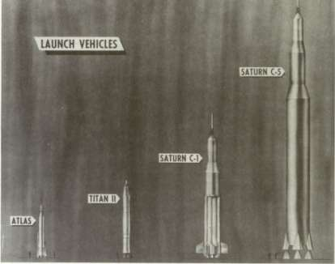
Early design concepts of C-l and C-5 versions of the Saturn launch vehicles.
second stage mounting a powerful new LH 2 engine, the M-l, under development by Aerojet General. Although Geissler predicted a test launch of the Nova by the autumn of 1967, the logic of development favored the C-5 because it was predicted to be fully operational by November 1967. 11
Nova, like Dyna-Soar, seemed to evaporate as other issues were settled that placed a premium on the development of its nearest competitor, the C-5. On 11 July 1962, NASA officially endorsed the C-1B as a two-stage Saturn for Earth-orbital tests of Apollo hardware. At the same time, NASA confirmed the choice of the LOR mode for the lunar mission, thereby focusing development on the C-5. Early in 1963, NASA Headquarters announced a new nomenclature for its large launch vehicles. The C-l became Saturn I, C-1B became Saturn IB, and C-5 became Saturn V. Nova was not even mentioned. 12
To RENDEZVOUS OR NOT TO RENDEZVOUS
The disarmingly simple NASA statement of 11 July 1962, confirming the choice of LOR as the mode, represented only the tip of a bureaucratic iceberg. The choice of LOR came after a series of skirmishes and
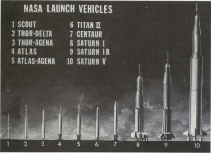
The stable of NASA launch vehicles that were actually built and flown.
engagements among various NASA centers and within Headquarters. The struggle in reaching the final decision also suggested some of the problems to be faced by NASA management when one center had responsibility for the launch vehicle and another organization had the payload. The problems were compounded when both were trying to fashion programs and develop hardware without always knowing what each would require in the end.
The von Braun group, after all, had been developing both payload and boosters as integral systems for years. Now it would be necessary to defer to different design teams and accept ouside judgments about payloads. In the case of Saturn, the payload development stemmed from the Space Task Group (STG) originally set up in October 1958 to manage Project Mercury. Located physically at Langley Research Center, Virginia, STG reported to the Goddard Space Flight Center at Greenbelt, Maryland. Beginning in 1959, STG received management responsibilities for studies leading to Project Apollo. 13 In the spring of 1960, STG and MSFC began closer contact when STG organized a special liaison group, the "Advanced Vehicle Team," nine men headed by R.O. Piland and reporting directly to the STG chief, Robert R. Gilruth. Among other things, the Advanced Vehicle Team was to maintain appropriate contact with the various NASA centers, and, specifically, to maintain "the necessary liaison with the Marshall Space Flight Center in matters
STAGES TO SATURN
pertaining to the development and planned use of boosters in the advanced manned space flight program." 1
Early on, participants in the liaison effort discovered that their style did not always mesh with that of MSEC. One trip report from an STG team member in October 1960 noted von Braun's desire for additional meetings in November and December, and added, somewhat peevishly, "Dr. von Braun wants to participate. This probably means another ballroom meeting." Apparently the MSEC method was to have a large gathering for a semiformal presentation, then break into smaller groups for detailed discussions. "I've reached the opinion that MSEC staff have no qualms about playing one group against the other ... if we have separate meetings," the correspondent complained, and warned STG to be careful. 10
Perhaps part of the problem was STG's lesser standing vis-a-vis Marshall as a full-fledged center. This aspect was improved in January 1960, when STG became a separate field element, reporting directly to the NASA Director of Space Flight Programs, Abe Silverstein. As Director of STG, Gilruth had his own staff of some 600, still physically located at Langley. With a new organizational structure and bureaucratic independence, STG was authorized to conduct advanced planning studies for manned vehicle systems, as well as to establish basic design criteria. STG also had authority to assume technical management of its projects, including the monitoring of contractors. By November, STG became even more independent when it was officially redesignated the Manned Spacecraft Center (MSC), 16 and plans were being made to transfer MSC to its new location near Houston, Texas, by the middle of 1962.
It is interesting that Gilruth and von Braun's emissary, Eberhard Rees, soon thereafter were stressing the "equality" of the two NASA centers. Meeting in July 1961, the two men also agreed on setting up four joint panels to cope with the growing problems of design, hardware, operational, and bureaucratic coordination: Program Planning Scheduling; Launch Operations; Apollo-Advanced Vehicles; Apollo-Saturn C-l. Each panel, in addition, included certain working groups for specific areas, with provisions for ad hoc joint study groups as the need arose. For problems involving other NASA agencies, there were special technical liaison teams. In general, technically knowledgeable members were assigned on a functional, rather than an organizational, basis; wherever possible, the responsibilities of experienced personnel already assigned to internal working groups were increased. 17
Naturally, all concerned hoped that the joint groups would promote understanding and reduce friction. That the Apollo-Saturn program succeeded as well as it did testifies to the value of such efforts, but this is
MISSIONS, MODES, AND MANUFACTURING
not to say that differences of opinion were always easily and quickly adjusted. The issue of EOR vesus LOR, for example, brought Marshall and the Manned Spacecraft Center into head-on conflict.
Early in 1961, NASA's studies for a manned lunar landing were keyed to the EOR mode using a Saturn vehicle or to direct ascent with the Nova. 18 In view of MSC's later acceptance of LOR, Gilruth's initial support of the direct ascent concept is intriguing. "I feel that it is highly desirable to develop a launch vehicle with sufficient performance and reliability to carry out the lunar landing mission using the direct approach," he wrote to NASA Headquarters reliability expert Nicholas Golovin in the autumn of 1961. As for the rendezvous schemes (and here he apparently referred only to EOR), Gilruth said that they compromised mission reliability and flight safety, and that they were a "crutch to achieve early planned dates for launch vehicle availablity, and to avoid the difficulty of developing a reliable Nova Class launch vehicle." At the same time, he understood the need for an Earth parking orbit during any mission to allow adequate time for final checkout of spacecraft, equipment, and crew readiness before going far from Earth. 19
The concept of lunar orbital rendezvous (LOR) had been studied at Langley Research Center as early as 1960. The idea was passionately advocated by John Houbolt, a Langley engineer who first encountered it while investigating rendezvous techniques for orbiting space stations. The Langley-Houbolt concept of LOR was soon absorbed by the STG-MSC crew, and MSC eventually became the leading champion of LOR. 20 Houbolt played a key role in converting Headquarters planners to the LOR concept. Convinced that the idea had not received a fair hearing, Houbolt bypassed everyone and wrote directly to Associate Administrator Robert C. Seamans, Jr., in November. Fulminating at what he viewed as grandiose plans for using boosters that were too large and lunar landers that were too complex, Houbolt urged consideration of LOR as a simple, cost-effective scheme with high likelihood of success. "Give us the go-ahead, and a C-3," Houbolt pleaded, "and we will put man on the moon in very short order."' 2
Houbolt's letter apparently swayed several managers at Headquarters, especially George Low, Director of Space Craft and Flight Missions, in the Office of Manned Space Flight (OMSF). But D. Brainerd Holmes, who presided over OMSF, still had a prickly managerial problem. There remained people at Headquarters with doubts about LOR, principally Milton Rosen, newly named Director of Launch Vehicles and Propulsion in OMSF. Early in November, Holmes and Seamans directed Rosen to prepare a summary report on the large launch vehicle program, which of necessity dealt with the issue of EOR-LOR-direct ascent. The Rosen study came on top of several other committee reports on vehicles and
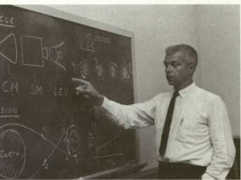
Left, John C. Houbolt goes through his chalk talk on the advantages of lunar orbit rendezvous over competing modes. Below, the typical mission profile using lunar orbit rendezvous.
SATURN V APOLLO
TYPICAL MISSION PROFILE
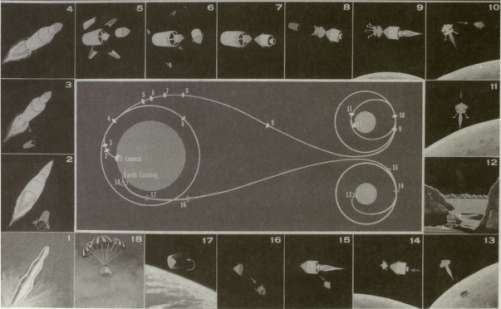
MISSIONS, MODES, AND MANUFACTURING
landing modes. Rosen's group of 11 people, including 3 from MSFC (Willy Mrazek, Hans Maus, and James Bramlet), submitted its report on 20 November. 22
The issue of how to achieve a lunar landing at the earliest date became a principal theme in the Rosen group's deliberations. Although rendezvous offered an early possibility of a manned lunar landing, Rosen's working group noted that actual rendezvous and docking experience would not be available until 1964. LOR also seemed the riskiest and most tricky of the rendezvous modes, and the group expressed a decided preference for EOR. Either way, a C-5 Saturn with five F-l engines in the first stage was the recommended vehicle. In spite of all the discussion of rendezvous, the Rosen committee in the end favored direct ascent as opposed to either EOR or LOR. "The United States should place primary emphasis on the direct flight mode for achieving the first manned lunar landing," the report flatly stated. "This mode gives greater assurance of accomplishment during this decade." Therefore, the Nova vehicle "should be developed on a top priority basis." 23 The trend toward LOR strengthened, however. Even though EOR became the "working mode" for budgetary planning for 1962, the debate went on.
Holmes hired Joseph Shea, an energetic young engineer, as Chief of the Office of Systems Engineering in OMSF, with responsibilities to conduct and coordinate mission mode studies. Holmes also instituted a top-level series of meetings under the rubric of "The Management Council," to discuss issues involving Headquarters and more than just one center alone. 24 At just about every meeting of the Management Council, Rosen and Gilruth got into a debate over the mode choice. Finally, as Rosen recalled, Gilruth came up to him after one of the meetings had adjourned and made one more pitch for the LOR mode. The most dangerous phase of the mission, Gilruth argued, was the actual landing on the moon. If Rosen's direct ascent idea was followed, then at the moment for lunar descent, that meant landing an unwieldy vehicle that was both quite long and quite heavy. A very touchy operation, Gilruth emphasized. LOR, on the other hand, boasted an important advantage: the lunar landing and lunar takeoff would be accomplished by a very light and maneuverable vehicle specifically designed for the task. Rosen confessed he had been preoccupied with simplicity from one end of the mission—the launch from Earth—and he had no convincing counterarguments when Gilruth made him look at simplicity from the other end, the lunar landing. 20
While the consensus at Headquarters now shifted towards LOR, the split between MSC and MSFC showed few signs of easing. On a swing through both MSC at Langley and MSFC at Huntsville in January 1962, Shea was discouraged by the entrenched position of the two centers: Marshall people displayed an "instinctive reaction" of negativism on the
STAGES TO SATURN
issue of LOR, while MSC personnel seemed too enthusiastic, even unrealistic, about rendezvous problems and the weight situation. Each center, Shea observed, intent on its own in-house studies, "completely ignores the capability of the other's hardware." 26 During the spring, however, MSC's research seemed to become more convincing. MSFC also began to regard LOR with increased interest. In mid-April, an MSC presentation at Huntsville elicited several favorable comments from von Braun himself. 27
The evidence suggests that von Braun increasingly felt the necessity of settling the issue so that they could get on with definitive contracts for launch vehicles and other hardware with long lead times. 28 Resolution of the EOR-LOR controversy finally came on 7 June 1962, when Shea and his aides were in Huntsville for still another session on the mode of rendezvous. In his concluding remarks, von Braun noted that the conference had given six hours of intensive analysis to various proposals, including Nova-direct as well as EOR and LOR. They all appeared to be feasible, von Braun commented; the problem was narrowing the choices to one and then acting on it. "It is absolutely mandatory that we arrive at a definite mode decision within the next few weeks, preferably by the first of July 1962," he declared. "We are already losing time in our overall program as a result of lacking a mocje decision." Then von Braun announced that LOR was Marshall's first choice.
There were complex technological, economic, and administrative reasons for Marshall's ultimate decision to go along with LOR. Although von Braun elaborated on 11 principal reasons for choosing LOR, the basic consideration involved confidence that it provided the best chance for a successful manned lunar landing within the decade. The concept promised good performance margins. Separation of the lunar lander from the reentry vehicle seemed desirable from many considerations of design and operation, and the overall concept suggested good growth potential for both the lander and the booster. Von Braun also implied that both sides could work together without the potential friction of an "I told you so" attitude. The fact that he felt compelled to proffer such a verbal olive branch suggests that the heat generated by the EOR-LOR debate must have been considerable. The MSFC Director observed that "the issue of 'invented here' versus 'invented there' does not apply," because both MSC and MSFC, in effect, adopted an approach originally put forth by Langley. "I consider it fortunate indeed for the Manned Lunar Landing Program that both Centers, after much soul searching, have come to identical conclusions," von Braun emphasized. "This should give the Office of Manned Space Flight some additional assurance that our recommendations should not be too far from the truth."
Quickly ticking off the reasons for deciding against EOR, von Braun pointed out that it was still feasible. A looming negative factor was the double loss incurred if, for example, the tanker launch went just fine, but
MISSIONS, MODES, AND MANUFACTURING
the manned launch was postponed too long on the pad or had to abort during ascent, wiping out the mission to the cost of two complete launch vehicles and associated launch expenses. In addition, von Braun noted complex management and interface problems with dual launches. Using the C-5 in a direct launch posed some thorny technical problems and permitted only the thinnest margins in weight allowances for the spacecraft, so the C-5 direct route was rejected. The huge Nova booster could have solved some of these problems, but it was rejected principally because of its size, which would have created requirements beyond the existing scope of fabrication and test facilities available to NASA; there were also serious problems seen in time, funding, and technical demands for a booster of Nova's dimensions. 29
Even with von Braun's imprimatur in June, the irrevocable decision for LOR did not come until the end of 1962. The Huntsville conclave produced agreement at the center level only; NASA Headquarters still had to formalize the choice and implement the decision. Early in July, Seamans, Dryden, Webb, and Holmes concurred with a recommendation for LOR by the Manned Space Flight Management Council, but the President's Scientific Advisory Committee still actively questioned the LOR mode. The committee evidently preferred the EOR approach because it felt the technological development inherent in the EOR concept had more promise in the long run for civil and military operations; its argument also suggested that the LOR choice stemmed from internal NASA expediency—as the cheapest and earliest mission possibility—even though technical analysis of LOR was incomplete. Nicholas Golovin and Jerome Wiesner, in particular, remained adamantly against LOR, and the controversy actually boiled over into a public exchange between Wiesner and NASA officials at Huntsville while President Kennedy was touring Marshall Space Flight Center in September.
Host von Braun and the President were standing in front of a chart showing the LOR maneuver sequence. As von Braun proceeded to explain the details, Kennedy interrupted, "I understand Dr. Wiesner doesn't agree with this," and turned around to search the entourage of newsmen and VIPs around them. "Where is Jerry?" Kennedy demanded. Wiesner came up to join Kennedy and von Braun, with Webb, Seamans, and Holmes also in the group. Wiesner proceeded to outline his objections to LOR, and some lively dialogue ensued, just out of the earshot of straining newsmen and dozens of onlookers on the other side of a roped-off aisle. "They obviously knew we were discussing something other than golf scores," Seamans recalled. In fairness to Wiesner, Seamans later noted, the President's scientific advisor had to play the devil's advocate on many issues when a robust agency was vigorously pressing its position. Wiesner's job was to make sure that the President received alternative views, and he once confided to Seamans that he was
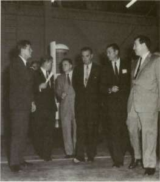
President Kennedy's visit to MSFC in September 1962 provided a forum for discussion of LOR: from the left, the President, MSFC Director Wernher von Braun, NASA Administrator James E. Webb, Vice-President Lyndon B. Johnson, Secretary of Defense Robert S. McNamara, and the President's Science Advisor Jerome B. Weisner.
not always comfortable in having to take negative points of view as Kennedy's advisor. Certainly, the LOR issue was one such example. As Seamans phrased it, "Here the President had his advisors recommending one approach, and the line operators recommending another." It was also one notable instance when Kennedy took a tack opposed to the PSAC position and supported NASA's decision for the LOR mode. 30
After a final round of studies, James Webb reaffirmed full commitment to LOR on 7 November and named a prime contractor, Grumman Aircraft Engineering Corporation, to build the lunar module. 31 Thus, by the end of 1962, the outlines of the Apollo-Saturn program were firmly delineated, with agreement on a family of three evolutionary Saturn vehicles, a functionally designed spacecraft, a technique to land men on the lunar surface, and a technique to return them safely to Earth.
AN AEROSPACE EMPIRE
The Saturn program created a vast new aerospace enterprise, partly private and partly public, with MSFC directing a group of facilities whose extent far exceeded anything in the days of the old NACA. The federally owned facilities under Marshall's immediate jurisdiction eventually included the sprawling installation at Huntsville; the cavernous Michoud Assembly Facility (MAF) at New Orleans; the huge Mississippi Test Facility (MTF) at Bay St. Louis, Mississippi; and the Slidell Computer Facility at Slidell, Louisiana. Other government-owned facilities directly related to the Saturn program included the NASA Rocket Engine Test Site at Edwards
MISSIONS, MODES, AND MANUFACTURING
Air Force Base in California and the government-owned production facilities for the S-II second stage at Seal Beach, California.
The growth of Marshall Space Flight Center at Huntsville began almost as soon as the transfer of the von Braun team from the Army Ballistic Missile Agency in 1960. This shift involved some 4.8 square kilometers of land (within the 162 square kilometers of the Redstone Arsenal) and facilities valued at $96 000 000, along with 4670 employees from ABMA's Development Operations Division. (For subsequent figures on manpower, plant value, etc., see the appendixes.) Settling in its new role, MSFC evolved as a facility of three distinct sectors, divided into an administrative and planning area, an industrial area, and test area. Although the transfer gave NASA the bulk of the land and facilities previously used by ABMA's Development Operations Division, von Braun's administrative staff was allowed to remain in their old ABM A offices on a temporary basis only, and a Saturn-sized test area was needed. Construction began on a new administrative complex and the first MSFC personnel took occupancy during the spring of 1963. Of the several approaches to the center, perhaps the most impressive was from the north. Driving several miles through the green pastures and wooded, rolling hills of the Alabama countryside, a viewer watched the administrative complex looming ever larger. Three multistory buildings were arranged in a "V" shape, with Building 4200, the tallest of the three, proudly riding the crest of a low hill. With the U.S. flag snapping smartly from its pole, this impressive office complex rising out of the rural landscape rarely failed to impress visitors. As director of the Marshall Space Flight Center, von Braun, with his staff, occupied office suites on the top two floors of Building 4200, irreverently known as the "von Braun Hilton."
Once over the crest of the hill, the visitor saw the rest of the Marshall complex stretching for several miles to the Tennessee River. In the foreground, the former ABMA laboratories and manufacturing areas occupied the equivalent of many city blocks. The labs incorporated facilities for a host of esoteric research projects, computation, astrionics, test, and other specialized research activities. Buildings for manufacturing, engineering, quality and reliability assurance, and others had cavernous, high bay areas attached to accommodate the outsized Saturn components. In the background, the skyline was punctuated by the silhouettes of the assorted test stands and other installations of the expanded test area. Here were the engine test stands, an F-l engine turbopump test position, and two especially large installations visible for miles. One was the big, burly test stand for the S-IC first stage, 123 meters high, completed in 1964. The second was the Dynamic Test Stand, 129 meters high, designed to accommodate the complete Saturn "stack" of all three booster stages, the instrument unit, and the Apollo spacecraft. Inside the Dynamic Test Stand, heavy duty equipment shook
STAGES TO SATURN
and pounded the vehicle to determine its bending and vibration characteristics during flight. Still further to the south, specially built roads for transporting the bulky Saturn flight stages led to docking facilities on the Tennessee River, where barges picked up or dropped off stages en route to other test sites or launch facilities at Cape Kennedy. 32
Except for the lawns and plantings around the administrative complex, Huntsville always had a factory look about it. Crisscrossed by streets and railroad tracks, Marshall still bore the stamp of its heritage as an Army arsenal, with lean, utilitarian structures, linked together by a web of electric and phone lines supported by ubiquitous poles. Buildings in the industrial area were frequently flanked by ranks of high-pressure gas bottles, cranes, hoists, and assorted large rocket components. A visit to the Manned Spacecraft Center at Houston, with its sleek, ultramodern office complexes and well-tailored inner courtyards (complete with ponds and rocky little streams) was a study in contrasts.
When Marshall was organized in 1960, the Army launch team under the direction of Kurt Debus became the Launch Operations Directorate, Marshall Space Flight Center. At the Army's Missile Firing Laboratory, the Debus team had been launching a series of Army vehicles, including Redstone and Jupiter, and had launched the first American Earth satellite, Explorer /.In the months following the transfer to NASA, they launched the manned Mercury-Redstone suborbital flights. As plans for the Saturn series were finalized, the Launch Operation Directorate, through Debus, participated in the search for a new launch site, large enough and removed far enough from population centers to satisfy the physical requirements of the big new space boosters. Cape Canaveral was chosen, and development of the new facilities began, with Launch Complex 34 becoming operational during the fall of 1961 to launch the first Saturn I vehicles.
The immense task of constructing new launch pads and developing the huge installations required for Saturn V operations called for a separate administrative entity. In March 1962, NASA announced plans to establish a new Launch Operations Center (LOG) at the Cape, and the change became effective on 1 July 1962. While close liaison continued, launch operations ceased to be a prime responsibility of MSFC, and Kurt Debus proceeded as Director, LOG, to develop the launch facilities for the Apollo-Saturn program. 33
Large as it was, the aerospace complex at MSFC could not begin to accommodate the escalating dimensions of the Saturn program. Consistent with its heritage as an Army arsenal with an extensive in-house capability, Marshall manufactured the first eight models of Saturn I's first stage and did the testing in its backyard. The physical size of other Saturn stages, the frequency of testing as production models came on line, and the sheer magnitude of the endeavor dictated the need for additional facilities located elsewhere. Each major contractor developed the
$T*iJCTUftis AND PROPULSION
SYSTEMS ANALYSIS AND INTEGRATION
^' MATIIMUS AND PROCESSES
SYSTEMS DYNAMICS
AND CONXfKH.
III
TEST lA
DATA SYSTEMS
IN1STRATlVt COMMIX
Left, an aerial view of Marshall Space Flight Center. Below, left to right, closeups of the Administrative Center, Propulsion and Vehicle Engineering Laboratory, and the test area (the three large stands are, from left, the F-l engine test stand, Saturn V dynamic test stand, and the Saturn V booster stand).
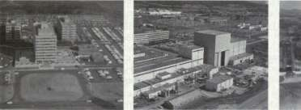
HIUHHHB
special industrial capabilities required for the unique sizes inherent in the Saturn program, including fabrication, manufacturing, and testing. There was a certain kaleidoscopic aura about all these arrangements, since some were accomplished entirely by the contractor on privately owned premises and others were undertaken in government-owned facilities, with the contractor supplying most of the work force.
For example, the Saturn IB and Saturn V first stages were manufactured at the Michoud Assembly Facility (known familiarly as "Michoud") 24 kilometers east of downtown New Orleans. The prime contractors, Chrysler and Boeing, respectively, jointly occupied Michoud's 186 000 square meters of manufacturing floor space and 68 000 square meters of office space. The basic manufacturing building, one of the largest in the country, boasted 43 acres under one roof. By 1964, NASA added a separate engineering and office building, vertical assembly
STAGES TO SATURN
building, (for the S-IC) and test stage building (also for the S-IC). By 1966, other changes to the site included enlarged barge facilities and other miscellaneous support buildings. Two things remained unchanged: a pair of chimneys in front of the Administration Building, remnants of an old sugar plantation. These ungainly artifacts served as reminders of Michoud's checkered past, from a plantation grant by the King of France in 1763, to ownership by the wealthy but eccentric New Orleans recluse and junk dealer, Antoine Michoud. Never a successful plantation, its sometime production of lumber and other local resources from the swampy environs helped generate the local slogan, "from muskrats to moonships."
The plant itself dated back to World War II, when it was built to produce Liberty ships. A hiatus in contract agreements shifted the emphasis to cargo planes, but only two C-46 transports rolled out before the war ended. The government facility remained essentially inactive until the Korean War, when the Chrysler Corporation employed over 2000 workers to build engines for Army tanks. Dormant since 1954, the building had been costing the government $140 000 per year to keep up. With so many jobs in the offing and the obvious level of economic activity to be generated by the manufacture of large rocket boosters, selection of the site occurred in a highly charged political atmosphere, with active lobbying by a number of congressmen and chambers of commerce from around the country. Eventual selection of the Michoud facility in 1961 followed a series of thorough NASA investigations, and Michoud easily fulfilled several high-priority considerations: production space and availability; location near a major metropolitan area; convenient year-round water transport facilities (to haul the oversized Saturn stages); and reasonable proximity to MSFC, the Cape, and a contemplated test-firing site for the finished stages. 34
The extent of computer services required for the activities at the Mississippi Test Facility and Michoud prompted MSFC managers to consider a major computer installation to serve both operations. Happily, a location was found that included a structure originally designed to support sophisticated electronic operations. At Slidell, Louisiana, 32 kilometers northeast of Michoud and 24 kilometers southwest of MTF, Marshall acquired a modern facility originally built by the Federal Aviation Administration. For modifications and installation of new equipment, MSFC spent over $2 000 000 after acquiring the site in the summer of 1962. The array of digital and analog computers for test, checkout, simulation, and engineering studies made it one of the largest computer installations in the country. 30
In contrast to Michoud, where the plant facility sat waiting, the development of the Mississippi Test Facility became a contest with Mississippi mud—to say nothing of the poisonous snakes and clouds of mosquitoes that plagued construction workers. Although NASA began
MISSIONS, MODES, AND MANUFACTURING
with a list of 34 potential locations, the site for test-firing Saturn V rocket stages logically had to be close to the production facilities at Michoud and also be accessible by water for shipment of S-II stages. Other criteria quickly ruled out most of the other contending sites. The test area had to be big. Size was a safety factor; test sites had to be widely separated from critical support and supply facilities in case of accidental destruction of a stage during a test run. More important, at the time the test facility location was being debated, NASA designers were looking ahead to big, deep-space booster stages of up to 111 million newtons (25 million pounds) of thrust, and lots of noise. Therefore, a test area of expansive proportions was required but in a location where a minimum number of people would have to be relocated. After juggling all of these requirements, in October 1961 NASA settled on a sparsely populated corner of Hancock County, Mississippi. A new, $300-million-plus space-age facility was hacked out of soggy cypress groves, Devil's Swamp, Dead Tiger Creek, and the Pearl River. By the intracoastal waterway and the Pearl River, MTF was only a 72-kilometer barge trip from the production facilities at Michoud, and was accessible by water to MSFC and the Cape.
The central test area, around the test stands, comprised 55 square kilometers, with a buffer zone of 518 square kilometers surrounding it. Approximately 850 families from five small hamlets were resettled outside MTF boundaries. The central test area was exclusively reserved for NASA use, and although the buffer zone was uninhabited, the area continued to be lumbered and teemed with wildlife, including wild hogs descended from abandoned farm stock. An employee picnic in 1967 frugally consigned some of these natural resources to a barbecue pit. 36
At the heart of MTF were the monolithic test stands: a dual-position structure for running the S-IC stage at full throttle, and two separate stands for the S-II stage. Laboratories, monitoring equipment, control center, and storage areas, including docks, were all deployed thousands of meters away. The MTF complex was tied together by 12 kilometers of canals (with navigation locks and a bascule bridge); 45 kilometers of railroads; and 56 kilometers of roads and paved highways. Under it all snaked 966 kilometers of cables, connecting test stands, laboratories, and data banks. Each month, MTF consumed enough electricity to keep 6000 households functioning.
An arm of MSFC at Huntsville, MTF had an administrative pattern that was a bit unusual. A comparatively small cadre of NASA personnel (about 100) carried out overall managerial and supervisory duties. This select group also made the final evaluation of test results and issued the flight-worthiness certificates to the stage contractors. Approximately 3000 contractor personnel made up the vast majority of the work force. North American and Boeing each had several hundred people running their respective test stands. The General Electric Company, with over 1500 people, had the contract for housekeeping services at MTF and
STAGES TO SATURN
provided maintenance for the facility and operational support at the test stands and elsewhere for the other tenants, including the construction firms. GE's range of support ran the gamut from 19 special items of cable equipment (for $1 183 187), to the always popular snake bite kits ($1.25 each). On occasion, GE hired cowboys to round up stray cattle in the outreaches of MTF, and it was GE that arranged for the transfer of the cemeteries during resettlement of the area's small towns.
Development of MTF had a hectic air about it. Construction delays mounted by early 1964, after Mississippi went through a highly unusual cold snap and a snowstorm. Heavy rains came during January, topping records that had been on the books for 30 years. The schedules for construction and testing merged to the point where the first test firings in 1966 were being planned concurrently with ongoing construction. The MTF director, Jack Balch, observed: "We're sure this is the only way to do it, but for the next year we'll be riding with one foot on each of two galloping horses." The government-industry team at MTF did the job; the first stage-firing test a 15-second test of the S-II stage, was performed successfully on 23 April 1966 in the test stand designated A-2. On 3 March 1967, a 15-second test of the S-IC-T (test) stage activated the first-stage facility. In September 1967, the other S-II stand, designated A-l, was declared operational. 37
SATURN I AND IB AND THE LOWER STAGES
While these facilities were being developed, MSFC drew on experience, accumulated during the days of ABMA and the Army's arsenal concept, and developed the Saturn I—the vehicle originally designated as Juno V. On the threshold of starting to work on the large Juno V class of vehicles and other space hardware in 1959, Dr. Ernst Stuhlinger, von Braun's chief scientific advisor at ABMA, briefed NASA officials on the range of expected challenges and research required to develop vehicle components for space exploration. He noted the potential hazards from radiation, meteors, temperature extremes, and weightlessness. To cope with these environments, Stuhlinger stressed the need for research on a broad front, including special investigation into a list of 11 crucial materials and their current shortcomings in the space environment— from the decomposition of dielectrics and sealants, to unusual regimes of friction and wear for bearings and various moving parts, to the degradation of plastic and exposed surfaces, and to the vaporization and vacuum sticking of metals. 38 Specific investigation of these and other problems moved on parallel tracks with the integration of components and materials into the launch vehicle design, even while the launch vehicle itself was taking form on drawing boards and in machine shops.
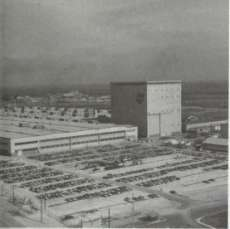
Left, an aerial view of NASA's Michoud Operations. Below, the 124-meter-tall test stand at the Mississippi Test Facility is hoisting the first operational S-IC first stage for the Saturn V into test position. Bottom, the map shows the acoustic effects of un S-IC firing.
MISSISSIPPI TEST FACILITY
S-IC ACOUSTIC EFFECTS
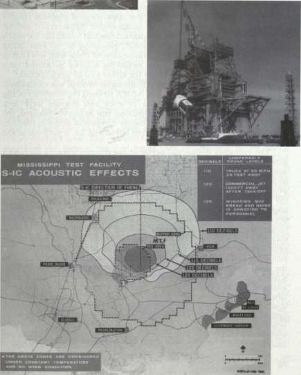
MV04MN07W*
STAGES TO SATURN
Like most major development projects, the evolution of the Saturn I changed between conception and execution, although the configuration that emerged in 1958 was subjected to remarkably few major design variations before its first launch in 1961. The basic outlines for ABMA's concepts of the Saturn I (when it was still called Juno V) were sketched out in two reports to Advanced Research Projects Agency (ARPA) in October and November 1958; insights on various aspects of early design choices were provided by von Braun himself in ABMA's presentation to NASA in December 1958. For example, original concepts for yaw, pitch, and roll control called for hinged outer engines: two hinged for pitch; two hinged for yaw; all four for roll. But application of adequate control forces required fairly high deflection of the engine thrust vector, and the engine contractor (Rocketdyne) complained that this would put too much stress on propellant flex lines. Instead, gimbaling of all four outer engines was adopted, achieving adequate control force with less engine deflection. The gimbal system for mounting engines permitted each engine in the cluster to swivel about for either yaw or pitch control.
On the other hand, the original multiengine concept was maintained. Throughout the early design phase, ABMA stressed the reliability of the multiengine approach in case one or even two engines were lost. Particularly in the case of manned missions, von Braun emphasized, the engine-out capability offered much higher margins of safety in continuing a mission until conditions were less hazardous for separation of the crew capsule.
The multitank design also persisted as a design choice. In his NASA presentation, von Braun praised the multitank design for several reasons. Component tanks could be flown by Douglas C-124 Globemasters to any part of the world and reassembled for launch; this procedure would provide a high degree of flexibility. The separate tanks eliminated the technical difficulties of internal horizontal bulkheads, required in a large tank vehicle, to keep fuel and oxidizer separate. It also meant a shorter, and more desirable, vehicle. In spite of the added weight, most rocket propellant tanks included internal fuel slosh baffles, because splashing and surging of the liquid fuel created problems in keeping the vehicle stable and under control. In 1958, von Braun predicted that no fuel slosh baffles would be required in the multitank design because of the small diameter of the individual tanks (although the flight versions actually incorporated slosh baffles in their design). A great deal of attention was also given to booster recovery schemes, in which the spent first stage would be recovered from the ocean after its descent had been slowed by retrorockets and parachutes. The Huntsville group foresaw immense savings in the recovery scheme, since the illustration given by von Braun assumed "5 or 19 years from now" a launch rate of 100 vehicles per year over a 5-year period, at a cost of about $10 million per launch. 39
MISSIONS, MODES, AND MANUFACTURING
More than any of the Saturn vehicles, the Saturn I S-I stage configuration evolved during flight tests (for details, see chapter 11). NASA developed the Saturn I as first-generation and second-generation rockets, designated Block I and Block II. The first four launches used the Block I vehicle, with inert upper stages and no fins on the first stage, the S-I. Block II versions carried a live second stage, the S-IV, sported a corolla of aerodynamic fins at the base, and used uprated H-l engines. The S-I first stage for the Saturn I also became the first stage of the Saturn IB; in this application, it was called the S-IB. Again, there were modifications to the fins, engines, and various internal components. Nevertheless, the basic details of fabrication and testing of the Saturn I and Saturn IB remained similar. The first stage of the Saturn I and IB may have looked like a plumber's nightmare, but it fit the criteria of conservative design and economy established early in the program. As Marshall engineers discovered, development of a new booster of Saturn I's size involved a number of design problems. Fabrication of the tankage was comparatively easy. Even though the former Redstone and Jupiter tanks had to be lengthened from 12 to 16 meters to carry added propellants, the basic diameters of the 178-centimeter Redstone and 267-centimeter Jupiter tanks were retained, so they could be fabricated from the tooling and welding equipment still available at Huntsville. The tank arrangement settled on by MSFC gave an alternate pattern of the four fuel and four oxidizer tanks, clustered around the 267-centimeter center oxidizer tank. The oxidizer tanks carried the load from the upper stages of the Saturn, the fuel tanks only contributing to the lateral stiffness of the cluster. When filled, the oxidizer tanks contracted 63.5 millimeters, which meant that the fuel tanks had to have slip joints at their upper ends to accommodate other structural elements that fluctuated with the tank shrinkage. All together, the Saturn I first stage carried 340 000 kilograms of propellants in its nine tanks. To keep the propellant in one tank from depleting too rapidly during flight, which would seriously unbalance the vehicle, the Saturn I incorporated an interconnecting pipe system, with regulating equipment to keep propellants at uniform level in all tanks during a mission. Each of the four outboard fuel tanks fed two engines, yet interconnected with the other tanks. The 267-centimeter center liquid-oxygen (LOX) tank provided series flow to the four outboard LOX tanks, which also fed two engines apiece.
Although the group of tanks eased the potential slosh tendencies of a single large tank, each separate cylinder contained fixed baffles, running accordionlike down the tank interiors. Pressurization for the LOX tanks was done by a heat exchanger, dumping it into the top of the LOX tanks as gaseous oxygen. Gaseous nitrogen from fiberglass spheres at the top of the booster pressurized the fuel tanks. The 48 spheres fixed to the top of the stage were curiously reminiscent of bunches of grapes.
The cluster of tanks was held together at the base by the tail section
STAGES TO SATURN
and at the top by an aptly named structural component known as the "spider beam." The tail section consisted of the thrust structure assembly as well as the heat shield, shrouding for engine components, holddown points, stabilizing fins (on the later Saturn I first stages), and other components. Assembly of the spider beam required a special fixture for precise alignment and joining of the heavy aluminum I beams, of which it was made. Starting with a hub assembly, eight radial beams were attached to it at 45-degree intervals. Then eight more cross beams were joined to the outer ends of the radials with splice plates. The spider beam played a dual role. Special hardware attached to it was used during the initial clustering of the tanks. In other words, the spider beam served as an assembly fixture, then remained as part of the stage's permanent structural assemblies, with each outboard oxidizer tank affixed to the beam. Because a smaller diameter upper stage of 5.6 meters was planned for the Saturn I, an upper shroud was incorporated as part of the structural transition from the larger 6.5-meter-diameter first stage. The upper shroud also enclosed telemetry equipment, umbilical connection points used in ground test and launch preparation, and space for the recovery system for the first stage. In the later versions (the Block II models), the shroud section was eliminated, and instruments were housed in a separate instrument segment atop the upper stage. The recovery section was no longer required; additional studies, completed by early 1962, indicated that the recovery scheme would require extensive modification to the stage, so the idea was finally dropped. 40
In the process of refining the design of the Saturn I, two major problems emerged: stability and base heating. As with most large rockets, the Saturn I was highly unstable, with the overall center of gravity located on the heavy, lower-stage booster, while the center of lift, in most flight conditions, was high on the upper stages. The nature of the problem called for more advanced control processes than used on aircraft and rockets the size of ICBMs. The low natural frequency of the big vehicle was such that when the gimbaled engines moved to correct rocket motions, special care had to be taken not to amplify the motions because the control system frequency was close to that of the vehicle itself.
More worrisome, at least in the early design stage, was the problem of base heating. Even with a rocket powered by only one engine, the flow pattern at its base proved nearly impossible to predict for the various combinations of speed and altitude. Base heating occurred when the rocket exhaust interacted with the shock waves trailing behind the vehicle. This clash created unpredictable regions of dead air and zones of turbulent mixing. Heated by the rocket exhaust, the air trapped in these areas in turn raised the heat levels at the base of the rocket to undesirable temperatures. Worse, the fuel-rich exhaust flow from the engine turbopump could get caught in these "hot-spot" regions, causing fire or explosion.
MISSIONS, MODES, AND MANUFACTURING
The base heating phenomenon became worse with multiengine rockets. The eight-engine Saturn I cluster began to look like a Pandora's box of base heating. To get an idea of what to expect, and to work out some fixes ahead of time, the Saturn design team ran some cold flow tests, using scale-model hardware, and called on NASA's Lewis Research Center, in Cleveland, to run some unusual wind tunnel tests. These investigations involved a booster model with eight operating engines, each putting out 1100 newtons (250 pounds) of thrust. Following the tests and extensive theoretical studies, designers in Huntsville came up with several ideas to cope with the base-heating situation. Arranged in a cross-shaped configuration, the engine pattern of the cluster was conceived to minimize dead air regions and turbulent zones. The four inner engines were bunched together in the center to reduce excessive heating in the central area, and the remaining four were positioned to avoid structural interference as the gimbaled engines swung on their mounts. The lower skirt was designed to direct large streams of high-energy air toward the four center engines in particular to prevent dead air regions from developing in their vicinity. A heavy fire wall was installed across the base of the booster near the throat of the engines, with flexible engine skirts to permit gimbaling and, at the same time, keep the super-heated gas from flowing back up to the turbopumps and propellant lines above. The problem of the exhaust from the turbopumps received special attention. For the four center engines, which were fixed, the fuel-rich exhaust gases were piped to the edge of the booster skirt and dumped overboard into a region of high-velocity air flow. In later vehicles, the exhaust gases were dumped exactly into the "centerstar" created by the four fixed engines. The gimbaled outboard engines required a different approach. The turbopump was fixed to the gimbaled engines; therefore an overboard duct for them would have required a flexible coupling that could withstand the high temperatures of the turbine exhaust gases. Instead, MSFC devised outboard engine attachments called aspirators, which forced the turbine exhaust into hoods around the engine exhaust area and mixed the turbopump exhaust with the engine's main exhaust flow. 41
Successful ignition and operation of an eight-engine cluster of Saturn's dimensions required extensive testing beforehand. In December 1958, ARPA released funds for modifications to one side of a two-position Juno test tower in order to test-fire the Saturn I first stage. Preparations for these static tests, as they were called, required extensive reworking of the Saturn's side of the tower, including a new steel and concrete foundation down to bedrock, a steel overhead support structure and a 110-metric ton overhead crane, a new flame deflector and fire-control system, and much new instrumentation. The job took a whole year. By January 1959, ABMA crews installed a full-sized, high-
STAGES TO SATURN
fidelity mockup of the first stage in the tower to check all the interfaces for service and test equipment. Satisfied, they took the mockup out, and put in the first static-test version. The test booster, SA-T, was installed during February, and late in March the first firing test, a timid one, burned only two engines for an eight-second run. Many skeptics still doubted that the eight-engine cluster would operate satisfactorily. "People at that time still had a lot of difficulty persuading individual rocket motors to fire up ... reliably," von Braun explained, "and here we said we would fire up all eight simultaneously." There were a lot of jokes about "Cluster's Last Stand," von Braun chuckled. Still, the firing crew at Marshall proceeded cautiously. Not until the third run, on 29 April 1960, did test engineers fire up all eight barrels, and then only for an eight-second burst. By the middle of June, the first stage was roaring at full power for more than two minutes.
Reverberations of the Saturn tests were quickly felt. The acoustical impact was quite evident in the immediate area around the city of Huntsville, and the long-range sound propagation occurred at distances up to 160 kilometers. The result was a rash of accidental damage to windows and wall plaster, followed by a rash of damage claims (sometimes filed by citizens on days when no tests had been conducted). Aware that climatic conditions caused very pronounced differences in noise levels and long-range sound propagation, engineers began taking meteorological soundings and installed a huge acoustical horn atop a tower in the vicinity of the test area. No ordinary tooter, the horn was over 7.6 meters long and had a huge flared aperture over 4.6 meters high. Its sonorous gawps, bounced off a network of sound recorders, gave acoustical engineers a good idea whether it was safe to fire the big rockets on overcast days. 42
To make the most use of the expensive test facilities, as soon as a booster completed its test-firing series and was shipped off to Cape Canaveral for launch, the SA-T booster was fastened back into place for further verification and testing of Saturn systems. The complex test instrumentation was complemented by the growing sophistication of automatic checkout systems used in the Saturn I first stage. Early hardware was designed for manual checkout. As more advanced electronics and computers became available, significant portions of the procedure were designed for automatic tests and checks. The scope of automatic test and checkout evolved into a complex network that tied together diverse, geographic test and manufacturing locations. Later generations of Saturn vehicles and individual components were electronically monitored, literally, from the time of the first buildup on the shop floor until the mission was finished in outer space.
Because manufacturing tests of individual stages occurred separately at diverse locations, a specialized facility was required to verify the
MISSIONS, MODES, AND MANUFACTURING
physical interface design, system integration, and system operation of the total vehicle. During a flight, natural structural frequencies occurred—the result of vibrations of moving parts, aerodynamic forces, and so on. If the control-force input of gimbaling engines, for example, reinforced the structure's natural frequency, the amplification of such structural deflections could destroy the vehicle. So a dynamic test stand, large enough to surround a complete two-stage Saturn I, was begun at MSFC in the summer of 1960 and finished early in 1961. The dynamic test facility was designed to test the vehicle either in entirety or in separate flight configurations. Vibration loads could be applied to the vehicle in pitch, yaw, roll, or longitudinal axis to get data on resonance frequencies and bending modes. Saturn I tests uncovered several problem areas that were then solved before launch. Matching frequencies in the gimbal structure and hydraulic system were uncovered and "decoupled." Static tests revealed weaknesses in the heat-shield curtains around the engines, so the flexible curtains were redesigned. Structural failure of the outer liquid-oxygen tanks required a reworking of the propellant flow system. 43
Historically, the style of ABMA operations emphasized in-house fabrication and production, as Army arsenals had traditionally done. As the scale of the Saturn program increased, MSFC made the obvious and logical choice to turn over fabrication and manufacture to private industry. At the same time, the center retained an unusually strong in-house capability, to keep abreast of the state of the art, undertake preliminary work on new prototype hardware, and to make sure that the contractor did the job properly (for management details, see chapter 9). The do-it-yourself idea was most strongly reflected in the development of the Saturn I first stage. Ten Saturn I vehicles were built and launched; the first eight used S-I first stages manufactured by MSFC, although the fifth flight vehicle carried a contractor-built second stage (the Douglas S-IV). The last two Saturn Is to be launched had both stages supplied by private industry. Douglas supplied the S-IV upper stage, and the Chrysler Corporation's Space Division supplied the S-I lower stage.
Late in the summer of 1961, while the first Saturn I was en route to Florida for launch, MSFC began plans to select the private contractor to take over its S-I stage. The manufacturing site at Michoud was announced on 7 September, and a preliminary conference for prospective bidders occurred in New Orleans on 26 September. The first Saturn I was launched successfully one month later (27 October), and on 17 November, Chrysler was selected from five candidates to produce the S-I first stage. The final contract called for the manufacture, checkout, and test of 20 first-stage boosters. Chrysler participated in the renovation of Michoud as it tooled up for production. In the meantime, the shops at Marshall turned out the last seven S-I boosters, progressively relinquishing the primary production responsibility. During December 1961, for example,
SATURN H STRUCTURE

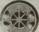
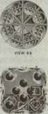
VIEW LOOKING FORWARD
Saturn I
Left, the drawing of the Saturn I S-I stage shows the multitank configuration. The cutaway shows the fuel baffles inside the tanks. Below, in MSFC's Fabrication and Engineering Laboratory an S-I is being assembled. The two end spider beams are connected to the central 267-centimeter-diameter liquid-oxygen tank; the first of the eight 178-centimeter outer tanks, used alternately for liquid oxygen and kerosene, is being lifted into position.
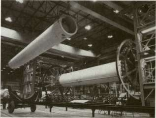
MSFC manufactured its last 1.78-meter and 2.67-meter tanks, turning over this job to Chance-Vought, of Dallas, which supplied both MSFC and Michoud as Chrysler took over the booster production. 44
Chrysler, a major automotive manufacturer, was no novice to the production of rockets, having worked with the von Braun team since
MISSIONS, MODES, AND MANUFACTURING
1954 producing Redstone rockets and their successor, the Jupiter. Chrysler easily shifted from the Saturn I to the larger Saturn IB. In July 1962, when NASA announced its intention to use the lunar orbit rendezvous, the space agency also released details on the two other Saturn vehicles. The three-stage Saturn V was planned for the lunar mission. A corollary decision called for development of an interim vehicle, the Saturn IB, to permit early testing of Apollo-Saturn hardware, such as the manned command and service modules, and the manned lunar excursion module in Earth orbit, as well as the S-IVB stage of the Saturn V. This decision permitted such flight testing a year before the Saturn V would be available. Chrysler's initial contract, completed late in 1962, called for 13 first-stage Saturn IB boosters and 8 Saturn I first-stage boosters. 45
In most respects, the new S-IB first-stage booster retained the size and shape of its S-I predecessor. The upper area was modified to take the larger-diameter and heavier S-IVB upper stage., and the aerodynamic fins were redesigned for the longer and heavier vehicle. The Saturn IB mounted its eight H-l engines in the same cluster pattern as the Saturn I, although successive improvements raised the total thrust of each engine to 890000 newtons (200000 pounds) and then to 912000 newtons (205 000 pounds). The thrust increase raised the overall performance of the Saturn IB; the performance was further enhanced by cutting some 9000 kilograms of weight from the stage cluster. A more compact fin design accounted for part of the reduction, along with modifications to the propellant tanks, spider beam, and other components and removal of various tubes and brackets no longer required. Additional weight savings accrued from changes in the instrument unit and S-IVB, and the insights gained from the operational flights of Saturn I. Many times, engineers came to realize designs had been too conservative—too heavy or unnecessarily redundant. The production techniques worked out for the Saturn S-I stage were directly applicable to the S-IB, so no major retooling or change in the manufacturing sequence was required. With so few basic changes in the booster configuration, existing checkout and test procedures could also be applied. At Huntsville, appropriate modifications were made to the dynamic test stand to account for the different payload configurations of the Saturn IB and the same static test stand served just as well for the S-IB first stage, although engineers reworked the stand's second test position to accept additional S-IB stages. 46
SUMMARY
During 1961-1962, several crucial decisions were completed to clarify configurations of the Saturn program and to agree on the mode to land astronauts on the moon. Once the idea of direct ascent via a Nova
Saturn IB
Right, engineers in a Lewis Research Center wind tunnel are aligning a model of the Saturn IB prior to firing tests to determine the amount and distribution of base heating from the blast of the eight engines. Below, three Saturn IBs are in various stages of assembly at Michoud.
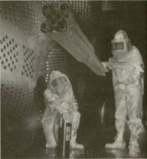
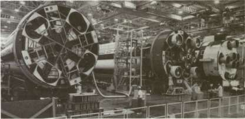
vehicle was discarded, the major issue became Earth orbital rendezvous or lunar orbital rendezvous. One of the last holdouts against LOR, Marshall eventually opted for it because it averted the multiple launches of an EOR sequence and offered the best chances for a successful mission before the end of the 1960s.
Once the issue of the mission profile had been settled, the task of developing the resources for manufacturing and testing of the Saturns became paramount, and engineers finalized the design of the Saturn I's first stage, which evolved into the first stage of the Saturn IB as well.
At this point, in the early 1960s, development of the Saturn I and IB loomed large in press releases and news stories, with special attention on
MISSIONS, MODES, AND MANUFACTURING
the lower stages. The work in this area set the baselines for manufacturing procedures, static firing tests of the multibarrel cluster, and the first launches of the Saturn I, with a live lower stage and a dummy upper stage. Because NASA and MSFC planners put such special emphasis on early static-firing tests of each stage, the engines had to be ready. From the beginning, MSFC maintained a strong effort in research, development, and production of Saturn propulsion systems. Meanwhile, parallel work on other hardware of the Saturn program proceeded: R&D on the upper stages for the Saturn I and IB (to be modified for the Saturn V); R&D for the first two stages of the mammoth Saturn V; plans for unique tooling required for production and fabrication; schemes for guidance and control of the launch vehicle. The main effort leading to large launch vehicles for manned lunar voyages was just beginning to build momentum.
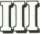
Fire, Smoke, and Thunder: The Engines
The H-l engine traced its ancestry to postwar American development of rocket propulsion systems, and the opening section of chapter 4 includes an assessment of this engine's technological heritage. While the development of other engines discussed in Part Three differed in specifics, the overall trends in their design, test, and achievement of operational status paralleled that of the H-l and sprang from the same evolving technology. Introduced on the Saturn V, the giant F-l engine, while more akin to the conventional cryogenics of the H-l, experienced many development problems. The problem of scale affected many aspects of Saturn hardware development, as the F-l story attests.
Application of liquid hydrogen (LH 2 ) technology constituted one of the key aspects of Apollo-Saturn's success. The upper stages of the Saturn I and Saturn IB introduced LH 2 -fueled RL-10 and J-2 engines, respectively, as discussed in chapter 5.
Conventional Cryogenics: The H-l and F-l
Development of rocket engines was usually conducted several steps ahead of the stage's tankage and the stage itself. This was done because of the inherent complexities of propulsion systems and inherent difficulties in engine research and development. Moreover, the choice of engine propellants influenced many elements of stage design, including the location of fuel and oxidizer tanks, propellant lines, and the various subsystems involved in the interface between the engine and stage.
Much of the ultimate success of the Saturn launch vehicles depended on the application of cryogenic technology—the use of liquefied gases in propellant combinations. The first-stage engines of the Saturn I, Saturn IB, and Saturn V (respectively, the S-I, S-IB, and S-IC stages) used a noncryogenic fuel called RP-1, derived from kerosene. All Saturn's engines used liquid oxygen as the oxidizer, and the engines of the S-IV, S-IVB, and S-II stages relied on liquid hydrogen as fuel. Put simply, the ability to carry large amounts of cryogenic propellants meant much more efficient launch vehicles. If designers had tried to build a rocket large enough to carry gaseous propellants, the size and weight of the tanks would have made it impossible to construct and launch such a vehicle. With the gaseous propellants converted to a liquid state, requiring less volume, designers had the opportunity to come up with a design capable of getting off the ground. In the 1960s, cryogenic technology experienced a phenomenal rate of growth and state of development. In support of the space effort, scientists and engineers accomplished a number of major breakthroughs, not only in the field of cryogenics itself, but also in the design and production of cryogenic rocket engines.
SATURN ENGINE APPLICATIONS
•I S-IVB
S-IV i SIX RL10
S-IVB
EIGHT HI
EIGHT H-l
S-IC FIVE F-l
SATURN I
SATURN IB
SATURN V
CRYOGENIC TECHNOLOGY
The scope of cryogenics was neatly summarized in a NASA report on cryogenics and space flight:
Cryogenics is the discipline that involves the properties and use of materials at extremely low temperatures; it included the production, storage, and use of cryogenic fluids. A gas is considered to be cryogen if it can be changed to a liquid by the removal of heat and by subsequent temperature reduction to a very low value. The temperature range that is of interest in cryogenics is not defined precisely; however, most researchers consider a gas to be cryogenic if it can be liquefied at or below —240° F. The most common cryogenic fluids are air, argon, helium, hydrogen, methane, neon, nitrogen, and oxygen. 1
In the early post-World-War-II era, as the United States' military services struggled to develop their own stable of launch vehicles, they leaned very heavily on the German wartime experience in technical areas
CONVENTIONAL CRYOGENICS: H-l AND F-l
beyond the basic design of vehicles and rocket engines. Although a reasonable amount of cryogenic technology was available in the United States by World War II, there was little experience in applying it to rocketry. Goddard's work in cryogenics was apparently overlooked or inappropriate to the scale demanded by the ICBM program.
The development of the intercontinental ballistic missile (ICBM) required a host of subsidiary technological advances, in such areas as cryogenic fluid systems, insulation, handling and loading propellants, and large storage dewars. As some American experts admitted later, "Initially, the basic V-2 cryogenics data were used because the data constituted the sole candidate for consideration at the time." Eventually, the United States built up its own storehouse of cryogenic technology for rocket development. The ICBM program and other research by civilian agencies prompted greater interest for governmentally supported research, and the Cryogenic Laboratory of the National Bureau of Standards in Boulder, Colorado, opened in 1952. By that date, cryogenics was firmly established as an industrial and research discipline, ready to support military requirements and the American space programs, particularly in the 1960s. 2
SATURN ENGINE ANTECEDENTS
The role of cryogenics in American launch vehicles increased steadily, starting with the liquid-oxygen oxidizer of the Vanguard first stage. Other rockets like the Redstone (and its derivatives), Thor, Atlas, Titan I, and finally the Apollo-Saturn series of launch vehicles—the Saturn I, Saturn IB, and Saturn V—used cryogenic oxidizers, fuels, or both. 3 As in so many engineering achievements, engine development for the Saturn program represented the culmination of earlier R&D efforts, as well as the improvement of earlier production items. The large vehicle boosters of the Saturn program borrowed liberally from the accumulated engine technology of the ICBMs and the intermediate range ballistic missiles (IRBMs) developed for the military, particularly the Thor and Jupiter IRBM programs as well as the Atlas ICBM. 4 The H-l traced its general lineage to no less than five prior designs: the control valves, gas generator system, turbopump assembly, and thrust chamber derived specifically from hardware applied in the Thor, Jupiter, and Atlas engine. 5
Thrust increased dramatically, from the 120000 newtons (27000 pounds) of Vanguard's first stage in 1959 to the 33 000 000-newton (7500000-pound) first-stage booster of the Saturn V in 1967. The fantastic jump in thrust levels was accompanied by gains in the specific impulse (a measure of efficiency of a rocket propellant, equal to the amount of thrust obtained per pound of propellant burned per second),
STAGES TO SATURN
especially with the introduction of liquid-hydrogen engines on the upper stages of the Centaur and Saturn launch vehicles, a major achievement of the American space program. Concurrently, advances were essential in a number of supporting technologies—lightweight components, compact packaging, materials application, and fabrication procedures. Propulsion system designers and engineers accumulated considerable experience along the way and refined various elements of the engine for better operation and introduced more sophisticated components and better control systems. Taken together, a myriad of improvements through research and development after the end of World War II contributed to higher levels of good engine design, with higher specific impulses, thrust stability, and flexibility in operational status. 6
A review of engine advances achieved by the mid-1960s can effectively characterize the accomplishments leading up to the Saturn and highlight the innovations that were actually incorporated into the Saturn propulsion systems. Problem areas, which limited the desired performance of these engines, received special attention from a wide variety of research programs. Many improvements stemmed from the research programs carried out by industry. Many more evolved from the cooperative efforts generated by NASA and the various military services. The primary technological advances can be summarized under the following categories: thrust chambers, turbopumps, and system design and packaging.
THRUST CHAMBERS
Many early liquid-propellant engines featured a conical nozzle. Engineering improvements in thrust chambers were aimed at more efficient shapes for increased performance and decrease in weight. Designers sought higher performance through higher area-ratio shapes with higher chamber pressures to minimize the size and weight of the thrust chamber. In the drive to produce large, high-pressure engines, a major hurdle was a satisfactory means to cool the thrust chamber. An early solution used double-wall construction; cold fuel passed through this space en route to the combustion chamber, thereby reducing the temperature of the inner chamber wall. But design limitations restricted coolant velocity in the critically hot throat area of the engine. Thin-walled tubes promised an ideal solution for the problem of the thrust chamber walls. Tubes reduced wall thickness and thermal resistance and, more importantly, increased the coolant velocity in the throat section to carry off the increased heat flux there. As chamber pressures continued to go up along with higher temperatures, designers introduced a variable cross section within the tube. This configuration allowed the tube bundle to be fabricated to the desired thrust chamber contour, but variations in the tube's cross section (and coolant velocity) matched the heat transfer at various points along the tube. The bell-shaped nozzle permitted addi-
CONVENTIONAL CRYOGENICS: H-l AND F-l
tional advantages in reducing size and weight when compared with what engineers called the "standard 15-degree half-angle conical nozzle." Without any reduction in performance, the bell shape also permitted a 20 percent reduction in length.
TURBOPUMPS
Advances in one area of the propulsion system created demands on other parts of the system. As thrust levels and pressures increased, so did demands on the turbomachinery to supply propellants at greater flow rates and higher pressures. Problems concerned the development of higher powered turbomachinery without increases in size or weight. Advances in turbomachinery design centered on higher speeds, and the goal of higher speeds encouraged the introduction of rotating components with smaller diameters. Essential subsidiary improvements dealt with high-speed bearings, the performance of high-speed inducers, and higher speeds for the impeller tips. Engineers succeeded in increasing the operating speed of bearings through minute attention to details of the operating environment and the fabrication of bearing parts. Designers reconsidered and redesigned bearings for their optimum size, the contact angle of surfaces touching the bearing, and the curvature of the race structure. Better performance was gained by engineering the newly designed bearings for combating contact fatigue and wear from overheating. Further refinements included the introduction of new, high-strength materials and improved surface finishes in the fabrication of precision parts. The innovative use of the engine's own propellants as "lubricants" was another advance. Although the propellants were not lubricants in the usual sense, they served the same purpose. The properties of the propellant-lubricants were more important in carrying off frictional heat to keep pump bearings cool and operable. This application simplified turbopump operation and eliminated the need for externally supplied lubrication.
Engine designers also attacked propellant cavitation, a condition in which the formation and collapse of bubbles or vapor pockets while pumping the propellant caused vibrations and damage to rocket machinery. Study programs found how the cavitation characteristics were related to the inducer through such minute factors as the angle of blades, taper, blade sweep, and the profile of the leading edge. More accurate theories on the phenomenon of cavitation enabled a redesign of the inducers that doubled their suction. The overall increase in suction efficiency of the turbopump permitted the pump to operate at higher speeds. This contributed to weight savings in the vehicle because tank pressures—and tank weight—could be lowered. The higher operating speeds and pressures triggered development of pump impellers to
STAGES TO SATURN
operate with higher tip speeds. The infusion of high-strength materials, plus design improvements and fabrication techniques paid off in reliability and greater speed. In total, all of these developments enhanced the incremental gains in power-to-weight ratios.
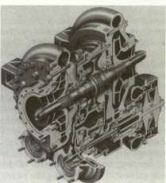
This cutaway drawing of the turbo-pump for the H-l engine shows the back-to-back arrangement of oxidizer pump (at left end) and fuel pump (at right end) operating off a common turbine and gear box (center). The propellerlike inducer blades can be seen on the left end of the shaft.
PACKAGING AND SYSTEM DESIGN
Over a brief span of time, the packaging and design of cryogenic rocket engines made dramatic progress. The size of the thrust chamber increased, while the "packaging" (pumps, turbomachinery, and related systems) remained relatively constant or actually decreased in physical size. At the same time, efficiency and design advantages accrued. In the early Redstone days, builders situated the turbopump, propellant lines, and controls above the thrust chamber and achieved directional control by the use of jet vanes. When gimbaled (movable) thrust chambers appeared on the scene, the design limitations of pumps, lines, and other paraphernalia dictated their attachment to the more solid footing of the vehicle's thrust structure. With the thrust chamber as the only movable part of the engine, engineers had to develop a new high-pressure feed line, with great flexibility, to link the propellant pumps to the thrust chamber. As the rise in chamber pressures and thrust levels put increased strains on the high-pressure lines, designers began studies of systems design and packaging to permit mounting the turbopump and associated gear onto the thrust chamber itself. In this configuration, the pump and chamber could be gimbaled as a single unit, permitting the installation of
CONVENTIONAL CRYOGENICS: H-l AND F-l
low-pressure "flex lines" between the pump inlets and the vehicle tanks. As it so happened, improvements in the design and efficiency of turbomachinery already made it compact and reliable enough to justify relocation on the thrust chamber. 7
PREDICTABLE ENGINE PROBLEM PHASES
In many ways, the H-l was a composite example of rocket engine development in the 1950s, modified and improved for its role in manned launches of the Saturn I and Saturn IB. Even though the H-l was derived from a propulsion system already in production (the S-3D engine for the Thor and Jupiter), requirements for increased thrust and generally improved performance led designers and engineers into new and frustrating problems. The evolution of both the H-l and the F-l engines fell into the pattern of many launch vehicle development programs, in which the engines constituted the pacing item. 8 Furthermore, the difficulties in engine design were usually predictable, as Leonard C. Bostwick, a veteran MSFC engine manager, knew all too well. "The development of liquid rocket engines followed similar patterns regardless of engine size," he asserted. Despite this ability of the engine managers to look with a crystal ball into the future, ability to avoid all expected pitfalls did not follow. "In the development of liquid rocket engines, problems occur at several distinct intervals," Bostwick continued. "The type of problem and the time phase can be predicted, but since the exact nature of the problem cannot be so readily defined, a five to seven year development program becomes a necessity." 9 In general, an engine development program progressed through four distinct "problem phases" over the five- to seven-year period.
The designers of each successive generation of rocket engines commenced their work with facts and figures accumulated—often painfully—from earlier designs and experience. If, however, the new engine was expected to perform better than the old ones, the designers very quickly found themselves in uncharted territory. They proceeded to push ahead of the state of the art, seeking more flexibility in operations, greater simplicity, increased thrust, and improved overall performance. At this point, Bostwick pointed out, "The first problem phase occurs because of the inability to totally extrapolate and build on existing knowledge." Just as problems were predictable, so were the problem areas. Bostwick was specific: "The problems will occur in the combustion mechanics, propellant movement, or in the propellant control system." The hardware evolved for this early development period often proved to be less than adequate, and faults would sometimes not show up until the engines moved past the initial firing sequence tests, perhaps in the late tests to maximum projected duration and thrust levels. When the
STAGES TO SATURN
problems then showed up, they were "often catastrophic," Bostwick wryly observed. For this reason, the engines were subject to extensive test programs to expose their inherent frailties.
Some time after the engine had successfully passed qualification tests of the basic engine design, or even the preflight rating trials, the second cycle of problems appeared. The difficulties involved the mating of the propulsion systems to the vehicle or stage. Because the development of the engines usually preceded the development of the stage by two or three years, the engines would not fit the mounting hardware and multitudinous connections with the stage. In addition, there were the peculiarities of late changes in the stage-engine interface requirements or possibly in the operational environment introduced by new variations in the flight plans. The stage contractors received prototypes or preflight-rated engines and cooperated with the engine interface. Inevitably, new sets of variables, which could not be anticipated from mating with a nonexistent stage or for changes in mission requirements, created problems.
As the engines phased out of the developmental stage and into full production, MSFC personnel and the manufacturer turned their attention to the third round of problems. They watched the elements of quality control, tolerances in the manufacturing of components, vendor selection, choice of manufacturing materials, and definition of the integral manufacturing process. "A continuing development program is planned during the period," Bostwick explained, "to provide the trained personnel, facilities and hardware capabilities, to investigate these problems and to prove out the required corrective effort."
Defying all these attempts to identify potential failures, to uncover and correct weaknesses before a multimillion-dollar vehicle left the launch pad, actual missions inevitably uncovered a fourth set of problems, because there was no way to duplicate the actual environment in which the vehicle had to perform. With launch dates carefully scheduled ahead of time to coincide with the launch "windows" and carefully paced to the requirements of the Apollo-Saturn program, the problems uncovered by one mission demanded a very fast response to keep the next phase of the program on schedule. For this reason, NASA and the contractors maintained a well-staffed cadre of specialists at the contractors' engineering and test facilities, backed up by the facilities available at MSFC.
With the four major problem phases successfully handled, the need for ongoing development and engineering monitoring continued. "When engine systems are tested to longer durations and more extreme limits," warned Bostwick, "problems are uncovered that may have existed for a long time but were not evident until the more severe testing on a larger engine sample produced the failure mode." Other factors entered the picture too, such as changes in process, improvements in manufacture, or
CONVENTIONAL CRYOGENICS: H-l AND F-l
changes in vendors, any or all of which could create a problem in quality of the hardware or introduce a different and incompatible material. 10
Despite the best intentions of all concerned, engine development and production encountered predicaments throughout the duration of the Saturn program.
THE H-l ENGINE: MILESTONES AND FACILITIES
With requirements for the first generation of Saturn launch vehicles established in general terms, planners began to consider the development of propulsion systems. To save time and money, NASA opted for an effort firmly rooted in existing engine technology. The result was a decision to modify the Thor-Jupiter engine, the 667 000-newton (150000-pound) thrust S-3D and uprate the engine to a thrust of 836000 newtons (188000 pounds). On 11 September 1958, NASA awarded the contract for the uprated engine to Rocketdyne, the original supplier of the S-3D engines for Thor and Jupiter. In the beginning, engineers designed the H-l for a clustered configuration to gain higher thrust than could be obtained from any existing single engine. The basic concept featured four fixed inboard engines and four outboard engines with gimbal mounts to provide attitude control for the vehicle. 11
Although the original specifications called for 836 000 newtons (188 000 pounds) of thrust, the first models were delivered at 734 000 newtons (165 000 pounds) of thrust—down rated for greater reliability. Eventually, the H-l engine served the first Saturn vehicles in four separate versions: 734 (165)-, 836 (188)-, 890 (200)-, and 912 000 newtons (205 000 pounds) of thrust. Saturn I used the 734 (165) and 836 (188) engines in clusters of eight; Saturn IB mounted eight units of the 890 (200) model in vehicles SA-201 through SA-205, with the 912 (205) model earmarked for SA-206 and subsequent vehicles. The engines all had the same approximate dimensions, standing 218 centimeters high, with a radius of 168 centimeters at the throat. The H-l engines incorporated a tubular-walled, regeneratively cooled thrust chamber. The propellant was supplied by twin pumps, driven through a gearbox by a single turbine, which was powered in turn by a gas generator burning a mixture of the vehicle's main propellants. 12
Because the engine's basic design was kept to existing components and propulsion systems, Rocketdyne got off to a running start; the first 734 000-newton (165 000-pound) thrust prototype came off the drawing boards, was put together in the contractor's shops, and static-tested by 31 December 1958, less than four months after the contract was signed. Development proceeded rapidly; by the spring of 1960, NASA had performed the initial test of the eight-engine cluster, and the H-l passed the Preliminary Flight Rating Tests by the fall of the same year. These
STAGES TO SATURN
milestones demonstrated the basic ability of this version of the H-l to meet the flight requirements, and on 27 October 1961, vehicle SA-1 was launched successfully. Close on the heels of the 734 000-newton (165 000-pound) thrust engine, NASA and Rocketdyne initiated work on more powerful models; intended for later Saturn I missions, the 836 000-newton (188000-pound) version of the H-l went through its preliminary flight-rating test on 28 September 1962. 13
For the S-IB first stage of the Saturn IB launch vehicle, MSFC began studies for uprated engines with Chrysler, the first-stage contractor. In November 1963, Chrysler returned its analysis of engine load criteria and suggestions to mesh the schedules for engines and stages. On this basis, MSFC directed Rocketdyne to go ahead from the more powerful 890 000-newton (200000-pound) thrust engine to a 912 000-newton (205 000-pound) thrust system for the most advanced missions contemplated for the Saturn IB. The schedule for engine deliveries stretched out through 1968, when, on 30 June 1967, Rocketdyne signed a contract calling for a final production batch of 60 H-l engines, bringing the total number purchased to 322. 14
Testing for the H-l engine occurred in several widely separated areas. Initial development took place in the engineering facilities at Rocketdyne's main plant in Canoga Park, California. In the nearby Santa Susana Mountains, the company used one engine test stand, known as Canyon 3b, for early development testing. For component testing, single-engine tests, and clustered-engine tests, the H-l program depended on facilities located at Marshall Space Flight Center in Huntsville. Installations at MSFC for H-l development included a component testing laboratory, a gas generator test stand, a single-engine test stand, and a full-sized booster test stand for engine cluster tests. At Rocketdyne's primary manufacturing complex for the H-l, located in Neosho, Missouri, the company relied on existing installations for manufacture and acceptance testing. Two dual-position test stands were available, built for the original purpose of checking out engines manufactured for Air Force missiles. A rental agreement, negotiated by NASA and the Air Force, permitted Rocketdyne to use one position on each of the dual stands. 15
THE H-l ENGINE: GENERAL DESCRIPTION
The models of the H-l used in the Saturn I and Saturn IB shared the same seven major systems: thrust chamber and gimbal assembly, exhaust system, gas generator and control system, propellant feed system, turbopump, fuel additive blender unit, and electrical system. Production of the H-l propulsion system involved several design aspects unique to the Saturn program. For example, the Saturn H-l engine came out of Rocketdyne's shops in two slightly different models. Each unit had a gimbal assembly for attachment to the vehicle, but the inboard engines,
CONVENTIONAL CRYOGENICS: H-l AND F-l
not required for thrust vector control, were immobilized by struts which held them rigidly in place. The outboard engines were equipped with gimbal actuators, attached to outriggers on the thrust chamber, that produced the gimbaling action for directional control for the vehicle. Basically identical, the inboard and outboard engines possessed an additional physical difference that necessitated a different label for each. The exhaust system varied for the outboard and inboard engines, although both types mounted a turbine exhaust hood, a turbine exhaust duct, and a heat exchanger (with a coil system to convert liquid oxygen to the gaseous oxygen required to pressure the oxygen tanks). The H-1C engine, the fixed inboard unit, had a curved exhaust duct to carry the turbine exhaust gases, and the H-1D engine, the gimbaled outboard unit, mounted a unit known as an aspirator. The inboard engines simply ducted the turbine exhaust overboard. The outboard engine exhaust was ducted into collectors, or aspirators, located at the exit plane of the nozzle. For the H-1D aspirator, designers chose a welded Hastelloy C shell assembly, mounted on the outside of the thrust chamber and extending beyond the thrust chamber exit plane. The aspirator prevented the fuel-rich exhaust gases of the gas generator from recirculating into the missile boat tail during flight. Instead, the gases merged into the engine exhaust plume.
As developed for the Saturn program, the H-l also shed a number of accessories carried over from the Jupiter engine system. Early versions of the H-l relied on the Jupiter's lubrication system, which featured a 73-liter (20-gallon) oil tank. The H-l designers arranged for the vehicle's own fuel, RP-1 (along with some additives), to do the same job. This arrangement eliminated not only the oil tankage, but also a potential source of contamination. The new approach required a fuel additive blender unit as part of the engine system, tapping RP-1 fuel from the fuel turbopump discharge system. During development, the H-l shed other remnants of its heritage from the Jupiter. A single-engine ballistic missile needed complex thrust controls to ensure its accurate impact on target. The Jupiter, perforce, carried considerable ancillary baggage to accomplish its mission—pressure transducers, magnetic amplifiers, hydraulic servo valves, and a throttling valve for the gas generator and liquid oxygen. The H-l engine, by contrast, relied on simple, calibrated orifices within the engine, because thrust control requirements were much less severe when individual engines were clustered. In the Saturn, this permitted a marked simplification of the H-l, accompanied by an attendant gain in reliability. 16
THE H-l ENGINE DEVELOPMENT PROBLEMS
Lee Belew, manager of the Engine Program Office at MSFC, noted four major development problems during the H-l era. These included
H-l ENGINE
VEHICLI EFFECTIVITY
THRUST (SEALEVEL) 200,OOOLB 205,QOOLB
THRUST DURATION 155 SEC 155 SEC SPECIFIC IMPULSE
(LB-SEC/LB) 260.5 MIN 261.0 MIN
ENGINE WT DRY
(INBD)
(QUTBD) ENGINE WT BURNOUT
(INBD)
(OUTBD) EXIT-TO-THROAT
AREA RATIO PROPELLANTS MIXTURE RATIO
260.5 MIN 261.0 MIN
1,830 LB 2,100 LB
2,100 LB 2,100 LB
2,200 LB 2,200 LB
2,200 LB 2,200 LB
ARE A RATIO 8TO1 8TO1
PROPELLANTS LOX&RP-l LOX&RP-l
MIXTURE RATIO 2.23*22 2.23*2 CONTRACTOR: NAA/ROCKETDYNE VEHICLE APPLICATION
SATURN IB/S-IB STAGE (EIGHT ENGINES)
JUPITER S-3D ENGINE SYSTEM
SATURN H-l ENGINE SYSTEM
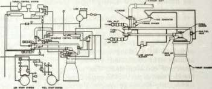
The H-l engine statistics are shown at the top; the sketch above shows the drive for simplification of the H-l engine from its parent S-3D. Below, left, is the H-l injector plate and at right is the H-l liquid oxygen dome bolted in position above the injector.
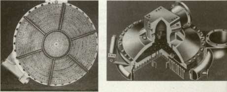
CONVENTIONAL CRYOGENICS: H-l AND F-l
combustion instability (or combustion oscillation, as he called it), cracks in the liquid oxygen dome, thrust chamber tube splitting, and problems with the pump gears and bearings. Other difficulties made their appearance, and each required a different kind of troubleshooting to solve the case.
The term "combustion instability" described an unsteady or abnormal combustion of fuel, a condition that not only reduced engine performance, but could destroy the engine—and the rocket as well. Within NASA and contractor circles, there was early concern about the potential problem of combustion instability, particularly in the uprated engines for Saturn I and the even larger engines planned for the Saturn V. Investigators deliberately set out to introduce combustion instability in the H-l to see if the engine could recover, and if not, redesign the engine to overcome this potential danger. Late in 1963, a research group evolved a technique to induce combustion instability. Workers fixed a special boss to the face of the injector, and attached a small, 50-grain bomb to it. Enclosed in a cylindrical nylon case designed for initial cooling by engine fuel, the bomb was protected during engine start and run up but soon heated up, and after a time, it ignited. The explosion disturbed the combustion flame front sufficiently to create an unstable operating condition. It was hoped that the injector could recover from the instability in less than 0.1 second, but the Thor-Atlas injectors, uprated to 836 000 newtons (188 000 pounds) of thrust, failed to effect recovery in 8 of 16 bomb tests. After some research and development work, designers rearranged the injector orifices and added some baffles to the face of the injector. The new design worked beautifully, giving satisfactory recovery at various thrust levels and an unexpected bonus—an actual increase in engine performance. 17
Another problem required changes in several flight vehicles. While vehicle SA-7 was undergoing a series of leak checks at Cape Kennedy in the fall of 1964, technicians came across a crack in the LOX dome of an H-l engine mounted on the first stage. An investigation team traced the weakness to stress corrosion of the aluminum alloy, which called for replacement of the domes on all eight engines. Fortunately, a new type of aluminum alloy dome with much higher resistance to stress corrosion had already been developed. Rocketdyne also introduced a new dome manufacturing process that included an additional heat treatment, as well as additional machining of the finished part prior to the anodizing process. The dome cracks henceforth disappeared. 18
Difficulties encountered with the tubular-wall thrust chamber exposed some of the problems encountered in the process of uprating a proven engine system to higher thrust levels, from 734 000 newtons (165 000 pounds) of thrust to 836 000 newtons (188 000 pounds) of thrust. Early in 1962, test engineers reported an alarming frequency of longitudinal splits in the tubes of the regeneratively cooled thrust chamber. Not only
STAGES TO SATURN
was this condition a hazardous condition and a hindrance to engine performance, but investigators also suspected that problems of combustion instability could be traced to fuel spraying embrittlement of the nickel-alloy tubes, a shortcoming that did not appear in the 734 000-newton (165 000-pound) engine because it operated at lower temperatures. In the hotter operating regimes of the 836 000-newton (188 000-pound) thrust engine, researchers discovered that sulphur in the kerosene-based RP-1 fuel precipitated out to combine with the nickel alloy of the thrust chamber tubes. The result: sulphur embrittlement and failure. The "fix" for this deficiency in the new uprated engine involved changing the tubular thrust chamber walls from nickel alloy to stainless steel (347 alloy), which did not react with sulphur. 19
At frequent intervals, MSFC and contractor personnel met together to discuss such problems and to consider solutions. At one such meeting, on 1 December 1966, the debate turned to three recently developed problems and included continuing consideration on a report about miscreant materials used in the manufacture of turbine blades. Convening in the conference room of the Industrial Operations Division of MSFC, the participants included technical personnel and management representatives from MSFC, Chrysler (the stage contractor), and Rocketdyne (the engine contractor). Chrysler and Rocketdyne led off the session, with commentary about the discovery of a dozen chunks of Teflon material behind the injector plate of No. 4 engine on the S-IB-7 stage. Workers at Chrysler (who had first discovered the problem) gathered up the 12 shards of Teflon and pieced them together into a flat shape about 5 centimeters square, with some nondescript markings. Representatives from Rocketdyne's Neosho facility, where H-l manufacturing was concentrated, went to work to discover the origin of the intruding flotsam. While this analysis progressed, related data hinted at similar anomalies in other engines of vehicle S-IB-7. The Rocketdyne spokesman presented data on engine No. 4 that revealed differences in its performance during recent static testing as compared with previous testing—no doubt because of the Teflon pieces obstructing the propellant flow. Rocketdyne was now concerned about two more engines. The No. 8 engine had performance data that paralleled No. 4 in some respects, suggesting a second Teflon interference problem, originating from one of the liquid-oxygen tanks. Moreover, the plumbing sequence in S-IB-7 caused the conferees to suspect that loose pieces of Teflon, originating from a particular liquid-oxygen tank, could also be lodged in the No. 5 engine system as well. The conference group agreed that engines No. 5 and No. 8 posed potential dangers and should be detached and opened up for thorough inspection, despite the impact on launch schedules.
Luckily, soon after the conference, Solar Division of the International Harvester Company, an H-l subcontractor for valve components and other fittings, found the source of the Teflon pieces. During some of
CONVENTIONAL CRYOGENICS: H-l AND F-l
its welding operations, Solar used Teflon buffers to protect the weld piece from abrasions caused by clamps. In fabrication and welding of flexible joints in the liquid-oxygen line, Solar surmised, one of the Teflon buffers could have slipped inside the line. They presented a sample of the buffer, which had the same general markings, size, and shape as the original culprit. With the source of the problem localized, MSFC and contractor officials agreed to call off the plans to inspect the other engines, and the case of the Teflon intrusion was closed, although some stricter fabrication and handling procedures went into effect.
The December 1966 conference took up other details affecting the Saturn program, such as steel filings that lodged, thankfully, in the mesh filter of the lubricating system for No. 6 engine sometime during short-duration firing tests on S-IB-8. The safety screen had done its job. Still, the discovery of loose filings anywhere in the Saturn's lubrication system or propellant system raised the specter of disaster. Chrysler, the stage contractor, was charged with finding the source of the loose filings. The conference also discussed a frozen turbine shaft of the No. 6 engine on S-IB-8. After a round of charges and countercharges, the group found that personnel from all three parties involved (Rocketdyne, Chrysler, and NASA) had conducted an engine test without conforming to written procedures. Conference officials agreed on closer enforcement and possibly new guidelines to prevent recurrences. 20
The final problem taken up by the December 1966 meeting—the turbine blades—involved the inadvertent substitution of the wrong material during manufacture. During a "hot test" (actually firing the propellants) on a Saturn IB first stage, one of the H-l engines experienced failure of turbine blades. After the engines were removed and dismantled, the defective blades were found to have been cast from 316 stainless steel rather than the Stellite 21 material specified in the production orders. An error at Haynes Stellite (a division of Union Carbide) created the mix-up. Although the quality control procedures employed x-ray analysis of each blade for flaws, penetration of welds, and differences in materials in a production batch, the x-ray check could not catch this particular mistake if all the blades were of the wrong material. Revelation of the error came late in 1966, when the Haynes Stellite plant in Kokomo, Indiana, was in the grip of a strike. The strike, of course, made communication between MSFC and Haynes Stellite personnel more difficult. Concern about the substandard turbine blades extended beyond NASA—the slip probably extended to blades in engines supplied for Thor and Atlas missiles. The turbine blade imbroglio not only compromised the Apollo-Saturn program, it shadowed the capabilities of the national defense as well.
Knowing that defective blades existed in H-l and other engines, investigators from Rocketdyne and MSFC went to work devising a system to identify the culprits without pulling all eight engines from every S-IB
STAGES TO SATURN
stage in the NASA stable, as well as military missiles, and laboriously tearing them down for lab analysis. As the strike at Haynes Stellite persisted, NASA and MSFC relied on official leverage to get representatives from Rocketdyne into the Haynes Stellite plant to find out what really happened. To the limit of its ability under the circumstances, Haynes Stellite cooperated, and the company itself came up with an "eddy current" machine to help in the detective work. Properly calibrated, this handy unit could differentiate between Stellite 21 material and the undesirable 316 stainless steel. Applied to Saturn propulsion systems, the investigation tracked down 10 H-l engines with alien turbine blades. Workers pulled all 10 engines from the stages and replaced the turbine wheels with new units, followed by a hot fire of each repaired engine to verify its performance and reliability. In addition to preventive measures instituted at Rocketdyne and MSFC, the contractor added to the inspection procedures an identification by alloy type of each mold that was poured and set up reference standards to catch variations in density during the x-ray examination. In addition, every blade was tested for hardness, and a sample of the vendor's shipments of turbine blades was subjected to a wider array of metallurgical tests. 21
With this kind of quality control and inspection, the H-l engines experienced only one serious problem in 15 launches of the Saturn I and Saturn IB. During the flight of SA-6 in May 1964, one engine shut down prematurely. The vehicle's "engine-out" design proved its worth, as the mission continued to a successful conclusion. Based on information transmitted during the flight, analysts located the failure in the power train, "somewhere between the turbine shaft and the C-pinion in the turbopump." The incident was not entirely unexpected: prior to the flight, a product improvement team had already developed an improved power train design. In fact, starting with vehicle SA-7, the new units had already been installed. 22
The development of the H-l represented a case study of predictable engine problem phases, as outlined by MSFC engine specialist Leonard Bostwick. True to form, the larger F-l experienced similar growing pains. If these travails seemed more acute, they reflected the size of a much more substantial engine.
ORIGINS OF THE F-l
Not long after its formation in 1958, NASA decided to opt for a "leapfrog" approach in high-thrust engines, instead of the traditional engineering procedure of measured step-by-step development. This decision was bolstered by Russian successes in lofting large orbital payloads into space and also by recent U.S. plans for circumlunar missions and manned excursions to the moon. NASA's contract award to
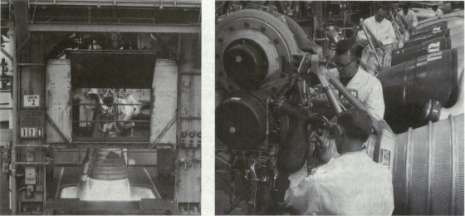
At left is shown a 1963 test firing of an H-l engine on a Rocketdyne test stand. At right are H-l engines in Rocketdyne's assembly line at Canoga Park, California.
Rocketdyne in 1959, calling for an engine with a thrust of 6.7 million newtons (1.5 million pounds), was a significant jump beyond anything else in operation at the time. Executives within the space program looked on the big engine as a calculated gamble to overtake the Russians and realize American hopes for manned lunar missions. It seemed within the realm of possibility too, by using engine design concepts already proven in lower thrust systems and by relying on conventional liquid oxygen and RP-1 propellants. 23
The F-l engine had roots outside NASA: the big booster came to the space agency in 1958 as part of the Air Force legacy. The F-l engine, developed by Rocketdyne, dated back to an Air Force program in 1955. NASA carefully husbanded this inheritance during the transfer of projects to the fledgling space agency, so that no inconsiderable amount of Air Force expertise, along with voluminous reports, came with the engine. NASA then conducted its own feasibility studies and Rocketdyne received, in effect, a follow-on contract in 1959 to step up work on the
i • 24
gargantuan propulsion system.
At that time, no vehicle existed to use the F-l. In fact, no designated mission existed either. Even though engine development was undertaken with no specific application in mind, this approach was not unprecedented. The complexities and uncertainties in the evolution of propulsion systems encouraged their prior development. This situation, while not out of the ordinary, did lead to some of the first design problems of the F-l. When Boeing was selected as prime contractor for the first stage of an advanced version of the Saturn in December 1961, the configuration
STAGES TO SATURN
of the vehicle was still uncertain. Not until 10 January 1962 did NASA confirm that the advanced Saturn (named Saturn V in February) would have a first stage (the S-IC stage) powered by five F-l engines. Since the engine's application was not known at first, designers and engineers tried to anticipate reasonable requirements, at the same time keeping the nature of the interface features as simple as possible. The eventual interface between vehicle and engines required changes, however, and this aspect of the F-l resulted in redesign to eliminate problems unintentionally built into the original model. 25
The original Air Force prospectus in 1955 called for an engine with a capability of 4 450 000 newtons (1 000 000 pounds) of thrust or more. Various studies went into comparisons of single engines and clustered engines in terms of their availability and reliability. Parallel studies included detailed consideration of engine subsystems to operate at thrust levels of 4450000 newtons (1000000 pounds) and up. By 1957, Rocketdyne had produced full, detailed analyses of a 4 500 000-newton (1 000 000-pound) thrust engine, and had also produced some models of components for the big engine, as well as a full-scale thrust chamber. In fact, work progressed so well that Rocketdyne began the first attempts to demonstrate main-stage ignition during the same year. The company's work on the F-l received a big boost from a new Air Force contract awarded in mid-1958. This document called for Rocketdyne to proceed with the design of a 4 500 000-newton (1 000 000-pound) thrust engine, paralleled by the development of appropriate new fabrication techniques, and capped by running initial tests for a thrust chamber and injector components. Including the prior effort, Rocketdyne had attempted several firing tests of the full-sized thrust chamber between 1957 and 1958. In January 1959, Rocketdyne's NASA contract included requirements for a series of feasibility firings of the new F-l booster; two months later the engine hinted at its future success with a brief main-stage ignition. The trial run demonstrated stable combustion for 200 milliseconds and achieved a thrust level of 4500000 newtons (1000000 pounds). In conducting these tests, Rocketdyne used a solid-wall "boilerplate" thrust chamber and injector—a far cry from flight hardware—but the unheard of mark of 4 500 000 newtons (1 000 000 pounds) of thrust had been reached by a single engine. 26
Engineers quickly sketched out the dimensions and general configuration of the big new propulsion system, drawing on their prior experience under the aegis of the Air Force and the results of the early "hot" test of preliminary components. At Edwards Air Force Base, where much of the early F-l research had been accomplished, Rocketdyne unveiled the first full-scale F-l mock-up on Armed Forces Day, 1960. Edwards continued as the center for full-scale engine testing. Basic research, development, and manufacturing took place at Rocketdyne facilities in Canoga Park, California, and many component tests were conducted at the company's
CONVENTIONAL CRYOGENICS: H-l AND F-l
Santa Susana Field Laboratory in the mountains nearby. The company lost little time in getting started on real engine hardware. Full-scale tests on the engine's gas generator began in March 1960, and testing of the prototype turbopump got under way in November of the same year. Given the size and cost of the F-l program, component testing represented an important practice—a technique that Rocketdyne continued to refine during the development phase of the total propulsion system. This "piecemeal" approach avoided the costs and complexities, as well as months of delay, that would have resulted from using the total engine system for the initial tests. Company personnel also conducted "component extended limits" testing, which called for the hardware under test to be pushed beyond its normal performance specifications to establish comprehensive guidelines of reliability and confidence. This concept proved to be so successful that Rocketdyne applied the same extended limits test concept to other engine test programs in progress.
The ability to put components like the gas generator and turbopump through test runs so quickly brought compliments from NASA's engine program managers at MSFC, who appreciated the problems connected with testing such an oversized propulsion system. Rocketdyne personnel pulled off another coup; they not only conducted tests on many full-scale components within a year of the initial contract, but on 6 April 1961, only 27 months from start, they went through a test run of a full-sized thrust chamber assembly prototype at Edwards Air Force Base. During the run, the thrust of the prototype chamber peaked at 7 295 000 newtons (1 640000 pounds) of thrust—an unprecedented achievement for liquid-propellant rocket engines. Even with the advantages of the Air Force research effort, this was a noteworthy record of accomplishment. 27 But a good many predicaments—and sophisticated test work—were to come.
A BIG ENGINE. BIG PROBLEMS
The story of the F-l development embodied an apparent contradiction: an awesome advance in engine performance and thrust, but an advance based on conventional rocket propellants (liquid oxygen and RP-1) and the existing state of the art. Designers and engineers, whether at government installations or at contractor plants, always had to remember the official NASA admonition about the F-l: keep within the framework of past experience concerning the liquid-fueled rocket engines. Joseph P. McNamara, a top executive at North American and early general manager at Rocketdyne, remarked that the F-l was really "a big dumb engine" when compared to some of its contemporaries that burned exotic fuels and featured more sophisticated features. Still, it was big. Despite its thoroughly conventional lineage, it was still a major step forward in rocket engine technology. "The giant stride in thrust was to be
STAGES TO SATURN
the major design advancement," said William Brennan, a top Rocketdyne executive. The very size of the engines portended some challenges. MSFC conceded that making "an enlargement of this magnitude is in itself an innovation." 28
The scale of the engine always seemed to threaten the goal of keeping the system "old-fashioned" rather than creating a daring new concept. For example, NASA continually emphasized engine reliability because of its intended use for manned missions. In this context, NASA limited the options for fuel and oxidizers for the F-l to proven types— liquid oxygen and RP-1—and stressed the greatest simplicity in overall engine design. This approach in turn dictated the incorporation of proven component designs wherever possible, combined with advanced metallurgy for added reliability. Once designers got into advanced metallurgy, they got into innovation. Coupled with the factors of size and operating requirements of the F-1, there ensued a number of technological advances and innovations in fabrication techniques.
Despite the accelerating tempo of technological advances in other rocket engines during the development of the maturing F-l, its teething troubles multiplied. Several factors affected early schedules. In the first place, testing programs for the oversized ¥-\ required new facilities, which had to be constructed. Test equipment had to be compatible with the king-sized proportions of the F-l test complexes. The design and fabrication of the test equipment alone, in the judgment of MSFC, constituted a "major development." Second, the size of the thrust chamber called for a new brazing process for joining the propellant tubes together. Third, the goal to simplify the engine and related systems resulted in considerable new work to rely on the vehicle's own fuel at high pressure to operate the engine control systems. In eliminating the original plans for a separate hydraulic system, some important redesign had to be done. A fourth area of extra effort stemmed from the extraordinary rate of propellant consumption of the engine (which reached three metric tons of fuel and oxidizer per second). The development of components to meet such demands involved very steep hardware costs and necessitated stringent procedures to obtain maximum use of data acquired from each test. Finally, the application of the F-l in manned flights created additional requirements for reliability and quality control above the limits normally established for unmanned vehicles. So, despite all the effort to rely on proven systems and components, a distinctly different kind of engine development story emerged. As acknowledged by the manager of the MSFC Engine Program Office, "the development of the F-l engine, while attempting to stay within the state of the art, did, by size alone, require major facilities, test equipment, and other accomplishments which had not been attempted prior to F-l development." 29
CONVENTIONAL CRYOGENICS: H-l AND F-l
Fabricated as a bell-shaped engine with tubular walls for regenerative cooling, the F-l had an expansion area ratio of 16 to 1 (with nozzle extension) and a normal thrust of 6 670 000 newtons (1 500 000 pounds). All engines were identical except for the center engine in each Saturn V, which did not gimbal. To accomplish its mission, the F-l relied on several subsystems, including the thrust chamber assembly (with the injector and other hardware as integral parts), the turbopump, gas generator system, propellant tank pressurization system, control system, flight instrumentation system, and electrical system. Additional paraphernalia, such as the thermal insulation blankets, were finally adopted as part of the overall F-l engine propulsion system. 30
At nearly every step of the way, the unusually large engine exhibited growing pains, and each component required special design attention in one form or another. In some cases, these problems were unanticipated; but even when designers expected a difficult development period, the solutions did not come easily. Such was the case with the F-l injector.
THE F-l INJECTOR
The injector sprayed fuel and oxygen into the thrust chamber, introducing it in a pattern calculated to produce the most efficient combustion. To the casual observer, the final production model looked simple enough. The face of the injector, or the combustion side, contained the injection orifice pattern, determined by alternating fuel rings and oxidizer rings, both made from copper. Across the face of the injector, designers installed radial and circumferential copper baffles. These baffles extended downward and divided the injector face into a series of compartments. Along with a separate fuel igniter system, the injector and baffles were housed in a stainless steel body.
In operation, the liquid oxygen dome, or LOX dome, located atop the thrust chamber assembly, channeled oxidizer directly into the injector. Fuel injection followed a somewhat more indirect route, entering the injector from the thrust chamber's fuel inlet manifold. As a means of ensuring the engine start and operating pressure, part of the fuel flowed directly into the thrust chamber, but the remainder was channeled by alternating tubes down the length of the regeneratively cooled thrust chamber, then back up again through the remaining tubes. The fuel entered a fuel collector manifold, consisting of 32 spokes leading to the injector. Finally, the fuel squirted through 3700 orifices into the combustion chamber to mix with the oxidizer, which entered through 2600 other orifices in the injector face.
Obviously, the injector demanded rigorous design work for tolerances and durability under extreme heat and pressures. At Rocketdyne,
F-l ENGINE
VEHICLI EFFECTIVITY
SA-504 & SAr501B«USA-503 SUBS£QutNT
THRUST (SEA LEVEL) 1,500,000 LB 1,522,000 LB THRUST DURATION 150 SEC 165 SEC SPECIFIC IMPULSE
(LB-SEC/LB) 260SECMIN 263 MIN
ENGINE WEIGHT
DRY 18,416 LB I8,500LB
ENGINE WEIGHT
BURNOUT 20,096 LB 20,180 LB
EXIT-TO-THROAT
AREA RATIO 16TO1 16TO1
PROPELLANTS LOX & RP 1 LOX& RP 1
MIXTURE RATIO 2.2712% 2.27±2%
CONTRACTOR: NAA/ROCKETDYNE VEHICLE APPLICATION:
SATURN V/S-IC STAGE (FIVE ENGINES)
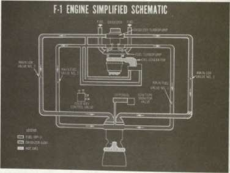
David E. Aldnch, the F-l Project Manager, and Dominick Sanchini, his chief assistant, wasted little time in initiating work on the injector, .oncernmg development testing, experience has shown that the injector presents the first major hurdle," Aldrich and Sanchini asserted. "Stable jbustion must be attained before injector cooling and other thrust-chamber development problems can be investigated,''they explained. At
ENGINE START
Engine start is part of the terminal countdown sequence. When this point in the countdown is reached, the ignition sequencer controls starting of all five engines.
Checkout valve moves to engine return position.
Electrical signal fires igniters (4 each engine).
a) Gas generator combustor and turbine exhaust igniters burn igniter links to trigger electrical signal to start solenoid of 4-way control valve.
b) Igniters burn approximately six seconds.
Start solenoid of 4-way control valve directs GSE hydraulic pressure to main lox valves.
5> Main lox valves allow lox to flow to thrust chamber and GSE hydraulic pressure to flow through sequence valve to open gas generator ball valve.
Propellants, under tank pressure, flow into gas generator combustor.
Propellants are ignited by flame of igniters.
8) Combustion gas passes through turbopump, heat r exchanger, exhaust manifold and nozzle extension.
&
Fuel rich turbine combustion gas is ignited by flame from igniters.
a) Ignition of this gas prevents backfiring and burping.
b) This o relatively cool gas (approximately 550 C) is the coolant for the nozzle extension.
Illy Combustion gas accelerates the turbopump, causinc r the pump discharge pressure to increase.
As fuel pressure increases to approximately 26,400 grams-per square centimeter (375 psig), it ruptures the hypergol cartridge.
The hypergolic fluid and fuel are forced into the thrust chamber where they mix with the lox to cause ignition.
TRANSITION TO MAINSTAGE
Ignition causes the combustion zone pressure to increase.
As pressure reaches 1 400 grams per square centimeter (20 psig), the ignition monitor valve directs fluid pressure to the main fuel valves.
Fluid pressure opens main fuel valves.
Fuel enters thrust chamber. As pressure increases the transition to mainstage is accomplished.
The thrust OK pressure switch (which senses fuel injection pressure) picks up at approximately 74,500 grams per square centimeter (1060 psi) and provides a THRUST OK signal to the IU.
the outset, it might have seemed logical to scale up designs successfully developed for smaller engines. However, development of a stable injector for the 1 780 000-newton (400 000-pound) thrust E-l engine required 18 months, and it seemed more than likely that the 4.5-million-newton (1.5-million-pound) F-l would require something more than just a "bigger and better" design concept.
Rocketdyne's ability to run injector and thrust chamber tests with full-scale hardware in March 1959, only two months from the date of the original contract, derived from its earlier Air Force activities. Some experimental hardware was already on hand, and Rocketdyne also had a usable test stand left over from prior experiments. The first firings were made with components several steps removed from what could be expected as production models. Because the injector paced so much of the overall design and because designers and engineers wanted to start as
STAGES TO SATURN
soon as possible, the thrust chamber tests used rough, heavy-duty hardware; it was cheap, and it was easy to work with.
Investigation began with a critical review of all prior operational injector work and current experimental studies to develop a promising avenue of design for the new component. Advanced theories were needed to understand the operation of an injector at much higher densities and higher chamber pressures than ever attempted. As a result of this preliminary theoretical work, the F-l injector evolved as a construction of copper rings. This promised the necessary structural rigidity, resistance to localized hot spots, and overheating at the injector face.
With a heavy-duty component in hand, the design work progressed to the next stage of design assessment, featuring a series of water-flow and calibration tests. These procedures verified spacing and shape of injector orifices. The next step involved statistics derived from the flow and calibration tests, giving engineers the kind of data they needed to plan appropriate start sequences for the injector and engine system. The culmination of these investigations occurred in the first hot tests, "one of the most critical stages in an injector development program." These trial runs late in 1960 and early in 1961 marked Rocketdyne's first wave of troubles concerning stability of the injector at rated thrust level for duration firing. 31
THE INJECTOR AND COMBUSTION INSTABILITY
At the outset, planners considered three different injector designs, all of them more or less based on the H-l injector configuration. "However, stability characteristics were notably poorer," reported Leonard Bostwick, the F-l engine manager at MSFC. "None of the F-l injectors exhibited dynamic stability." Once instability got started in the engine, nothing stopped it until the test engineers cut off the propellants and shut down the entire engine. Obviously, this was not the way to successful missions. The design team tried variations of baffled injectors and flat-faced injectors with little improvement, except that the flat-faced designs could be expected to create more damage than their counterparts with baffles. Finally, all hands agreed that the attempt to scale up the H-l injector to the F-l size just would not work. There were too many variables: high chamber pressures, a lower contraction ratio, greater density requirements for the injector, and much larger diameter of the thrust chamber. With the concurrence of MSFC, Rocketdyne began a new path of investigation to select an injector design with inherently